Strikkebutikk — varme i hver maske
Gensere, skjerf, sokker og pledd, strikket for hånd av naturlig ull. Ingen fabrikk — bare hender, pinner og tid lagt ned i hvert eneste plagg.

01Hvorfor håndarbeid
Bare naturgarn
Ull, merino, alpakka, bomull. Ingen knirkende syntetikk: naturfibre varmer, puster og blir ikke elektriske.
Det finnes ingen maken
Hvert plagg strikkes i ett eksemplar, til én bestemt person. Små særpreg ved håndarbeidet er ikke feil — det er mesterens signatur.
Årevis, ikke én sesong
En fabrikkgenser strekker seg i løpet av vinteren. En håndstrikket genser varer i 5–10 år ved vanlig stell og overlever moten mer enn én gang.
Langsom mote
Et plagg laget på bestilling støver ikke ned på et lager og havner ikke på dynga etter en måned. Garnrester blir til barneplagg og prøvelapper — helt uten svinn.
02Katalog
Prisene er veiledende («fra»): den nøyaktige prisen avhenger av størrelse, garn og mønster og avtales ved bestilling. Tidene gjelder bestilling «fra bunnen av».

Gensere med skandinaviske mønstre er butikkens varemerke.
Gensere og jakker
Klassiske og med skandinaviske mønstre, av ren ull eller myk merino. De varmer på ordentlig — prøvd gjennom norske vintre.
fra 1 200 krSkjerf og snoder
Lange skjerf, snoder som går to ganger rundt, sjal. Ensafarget eller med fletter — under kåpen og til hverdags.
fra 450 krLuer
Varme luer med oppbrett, med eller uten dusk. Voksen- og barnestørrelser, og parsett til hele familien.
fra 350 krSokker og votter
Ekte ullsokker — hjemme, i støvlene, på fisketur og på tur. Votter og vanter med mønster.
fra 250 krPledd og hjemmekos
Store pledd i grov strikk, putetrekk, koppevarmere. Et hjem man har lyst til å komme tilbake til.
fra 900 krBarneplagg
Sparkebukser, babysokker, luer og leker av allergivennlig barnegarn. Mildt mot huden — og mot besteforeldres hjerter.
fra 300 kr03Galleri
Strukturer, farger og stemning — på nært hold. Slik ser ekte håndarbeid ut.


04Materialer og garn
Verkstedets palett: fra rolige naturtoner til dype nordiske farger.
Saueull
Den varmeste og mest slitesterke. Til gensere, sokker og pledd. Den «biter» litt — og nettopp derfor varmer den så godt.
Merino
Fin ull fra merinosau: myk, stikker ikke, passer til barn og sensitiv hud. Til luer, skjerf og barneplagg.
Alpakka
Lettere og varmere enn saueull, med en edel glans. Til skjerf og jakker «for finere bruk».
Mohair
Et dunlett slør til lette, nesten vektløse plagg. Strikkes ofte sammen med silke eller merino.
Bomull og lin
Til den varme årstiden: topper, barneplagg, hjemmetekstiler. Ikke for varmt, og lett å vaske.
Sokkegarn
Ull med et innslag av nylon: sokkene slites ikke ut på én sesong og holder formen. Hjemme, på tur, på fiske.
05Slik tar du mål
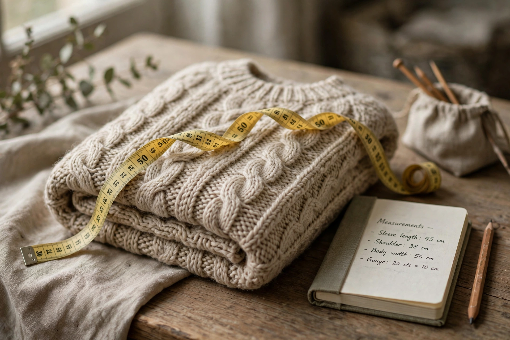
Fem minutter med målebåndet — og plagget sitter som om det har vært strikket til deg i årevis.
Målene tas med et mykt målebånd, uten å stramme. Er du usikker — skriv i skjemaet nedenfor, så hjelper vi deg.
| Plagg | Hva du måler | Hvordan |
|---|---|---|
| Lue | Hodeomkrets | Over brynene og rundt den mest framtredende delen av bakhodet |
| Sokker | Fotlengde | Fra hælen til tuppen av stortåa, stående |
| Votter | Håndflateomkrets | Rundt fingerknokene, uten tommelen |
| Skjerf / snod | Ønsket lengde | Et vanlig skjerf er 150–180 cm; en snod går én eller to ganger rundt |
| Genser | Brystvidde + lengde | Brystet måles på det bredeste punktet; lengden fra skulderen til ønsket kant nede |
| Pledd | Størrelse | Til barn — 80×100 cm; til lenestolen — 130×170; til sengen — fra 150×200 |
06Sesongutvalg
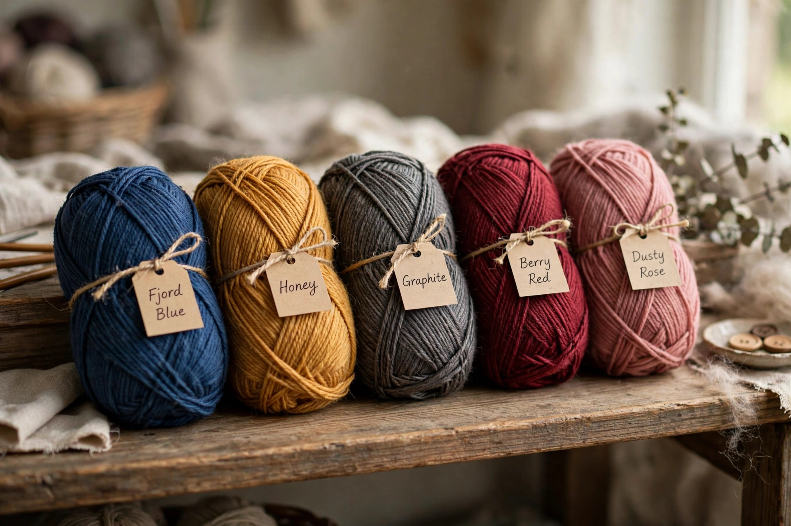
Fjord om vinteren, Honning om høsten: utvalgene settes sammen etter sesong og etter menneske.
Nordisk sett
Genser med jacquard, lue og votter i samme fargeskala, tykke sokker. Alt du trenger når det allerede er mørkt klokken fire om ettermiddagen.
Lett sett
Topper og jakker i bomull til kveldene, barneplagg i bomull, tynne pledd til verandaen og pikniken.
07Gavesett
Hvert sett pakkes i en eske med kort — du kan signere det for hånd.
«Varm kveld»
Pledd + to par hjemmesokker. Til innflytting og vinterhøytider.
fra 1 300 kr«Til babyen»
Babysokker, lue og et lite pledd av barnegarn. Til fødsel og dåp.
fra 650 kr«Mot nord»
Lue, votter og sokker i samme fargeskala. Til fiskeren, turgåeren og alle som lever vinteren på ordentlig.
fra 800 kr08Om mesteren
Hver maske — for hånd. Derfor finnes det aldri to helt like plagg.
Jeg heter Nadia. Jeg bor i Norge og har strikket hele livet — først til mine egne barn, så til barnebarna, og nå til alle som setter pris på ekte ting. Jeg arbeider bare med naturgarn: ull, merino, alpakka. Hvert plagg strikkes i ett eneste eksemplar, sakte og med kjærlighet — og varer i årevis, ikke bare én sesong.
I en genser går det flere titalls timer med arbeid og om lag to kilometer garn. Jeg jager ikke etter antall: heller ett plagg som blir brukt og tatt vare på, enn ti «til engangsbruk».
09Slik blir et plagg til
Idé
Vi snakker om modell, farge og hvem det strikkes til
Prøvelapp
Det strikkes en prøvefirkant: vi sjekker mønster og strikkefasthet
Strikking
Hovedarbeidet — dager eller uker, maske for maske
Etterarbeid
Montering, damping og kontroll av hver minste detalj
Innpakking
Vi pakker det vakkert inn og sender det til deg
Fletter, jacquard, ribb: mønsteret velges etter plagget og etter karakteren til den som skal eie det.
10Skreddersydd bestilling
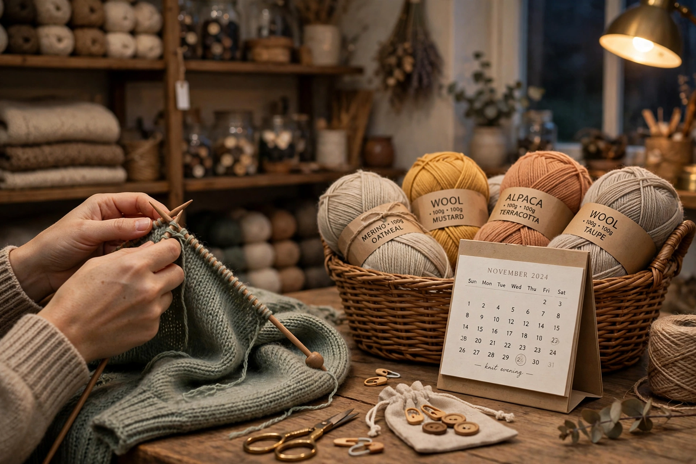
En skreddersydd bestilling begynner med en samtale — og går i ditt tempo, ikke fabrikkens.
Vil du ha en genser «som på bildet», men i din farge og din størrelse? Det er slik de beste plaggene blir til.
Fortell om ideen
Hva vi strikker, til hvem, hvilken farge og størrelse. Du kan sende et bilde som eksempel — gjennom skjemaet nedenfor.
Vi velger garn
Vi finner sammensetning og fargetone som passer budsjettet og sesongen din; og regner ut nøyaktig pris og tid.
Vi strikker og sender
Forsendelse i Norge og til hele verden. Før sending får du et bilde av det ferdige plagget.
| Plagg | Vanlig tid | Merknad |
|---|---|---|
| Lue, votter | 2–4 dager | Kan haste, til en høytidsdag |
| Sokker | 3–5 dager | Parbestillinger til familien — med rabatt etter avtale |
| Skjerf, snod | 4–8 dager | Avhenger av mønster og lengde |
| Barneplagg | 3–7 dager | Bare allergivennlig garn |
| Pledd | 1–3 uker | Store størrelser avtales for seg |
| Genser, jakke | 2–4 uker | Jacquard og fletter — nærmere den øvre grensen |
11Reparasjon og restaurering
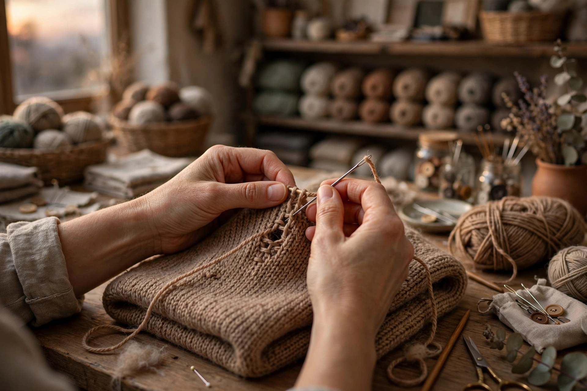
Maske til maske: et elsket plagg kommer tilbake til livet, ikke opp på hylla.
Er favorittgenseren slitt på albuene? Har bestemors pledd fått besøk av møll? Ikke skynd deg å skille deg av med ting som har en historie.
- stopping og kunstferdig restaurering av slitte steder;
- utskifting av strikk på sokker og ermer, ny strikk i halsen;
- forlengelse av barneplagg «med vokseplass baklengs» — og forkorting av voksenplagg;
- omstrikking av et gammelt plagg til et nytt: vi rekker det opp og strikker det på nytt av det samme garnet.
Send et bilde av plagget gjennom skjemaet nedenfor — vi vurderer ærlig, før arbeidet begynner, om det lar seg gjøre og hva reparasjonen vil koste.
12Slik steller du ull
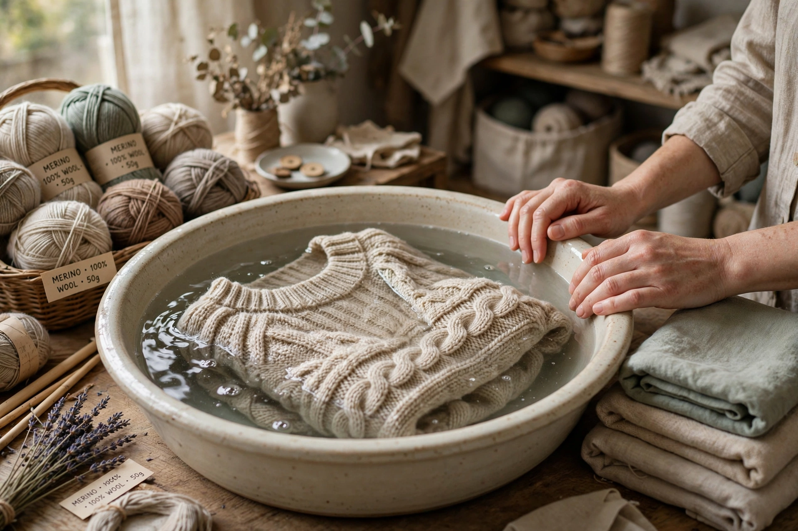
Sjelden, skånsomt, i lunkent vann — og ullen varer i årevis.
- Vask sjelden og skånsomt: for hånd eller i maskin på ullprogram, i kjølig vann, med et spesialmiddel.
- Ikke vri opp: klem vannet forsiktig ut i et håndkle.
- Tørk flatt på et håndkle, form plagget til — unna radiatoren.
- Oppbevar sammenbrettet, ikke på kleshenger; om sommeren — med lavendel eller sedertre mot møll.
- Luft det ut: ull elsker frisk luft og blir ofte «vasket» bare av en tur ut på balkongen.
- Nupper fjernes med en nuppefjerner eller en myk børste — ikke med fingrene.
- Flekker bør klappes tørre med en gang, ikke gnis: ull liker ikke friksjon når den er våt.
13Levering og betaling
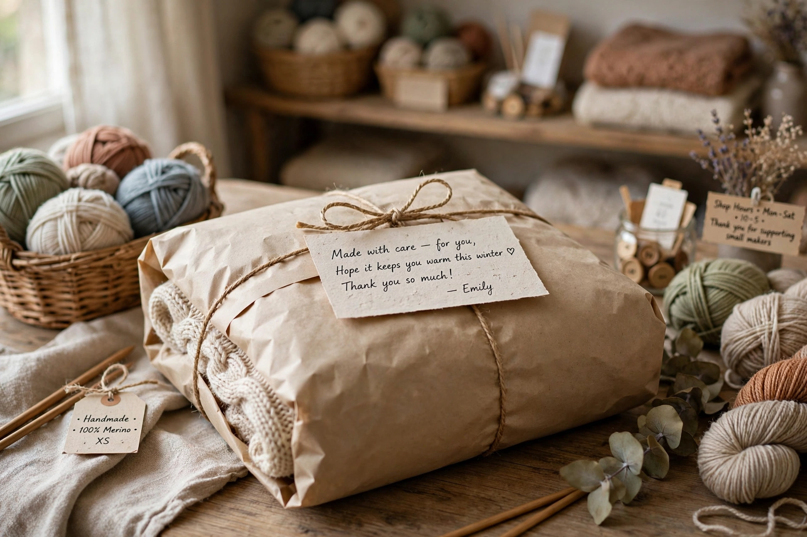
Papir, hyssing og et kort signert for hånd: slik reiser plagget hjem til deg.
I Norge og til hele verden
Innen Norge — med posten (Posten), vanligvis 2–5 dager. Til resten av verden — etter avtale, tidene avhenger av landet. Hver pakke pakkes slik at det er en glede å åpne den.
Etter avtale ved bestilling
En skreddersydd bestilling starter etter forskuddsbetaling for garnet; resten — før det ferdige plagget sendes. Detaljer (Vipps, bankoverføring, PayPal) avtales personlig ved bestilling.
14Ofte stilte spørsmål
Kan du strikke etter et bilde fra internett?
Ja, i de fleste tilfeller. Send bildet gjennom skjemaet nedenfor — vi sier ærlig hva som blir helt likt, og hva som må tilpasses.
Jeg har mitt eget garn. Tar du jobben?
Ja, hvis det er nok garn og det passer til plagget. Vi regner på det sammen før arbeidet begynner.
Hva om plagget ikke passer i størrelsen?
Derfor tar vi målene så nøye i starten. Er feilen vår — lager vi det på nytt. Var målene unøyaktige, snakker vi om tilpassing.
Strikker du til allergikere og nyfødte?
Ja: barnemerino og ubehandlet bomull, mykt og allergivennlig. Nevn det i bestillingen.
Kan jeg bestille i siste liten, til en bestemt dato?
Små plagg (lue, votter, sokker) rekker vi ofte på noen få dager. Skriv så tidlig som mulig — vi sier ærlig om vi rekker det.
Gir du rabatt når man bestiller flere plagg?
For familiesett og parbestillinger — ja, etter avtale. Bare spør, ikke vær beskjeden.
15Til menn
Menn bruker strikk i tiår etter tiår — når plagget er strikket ærlig og etter mål.
Gensere uten overflødig pynt
Dype naturfarger, strenge mønstre, tett strikk. En genser som passer like godt i fjellet som ved familiebordet.
fra 1 400 krSokker og luer til egne gjøremål
Fiske, jakt, arbeid ute, vinterreiser. Forsterket hæl, høy ribbekant, ingen kompromisser når det gjelder varme.
fra 250 krKontakt oss
Vi svarer i løpet av dagen. Ingen spam — bare en samtale om plagget ditt.
Skriv til Nadia 💌
En bestilling, et spørsmål, et bilde av en ting som skal repareres, eller bare en tilbakemelding — fyll ut skjemaet, så kommer brevet rett til Nadias e-post:
Nadia svarer personlig, vanligvis i løpet av en dag eller to.
16Familiesett
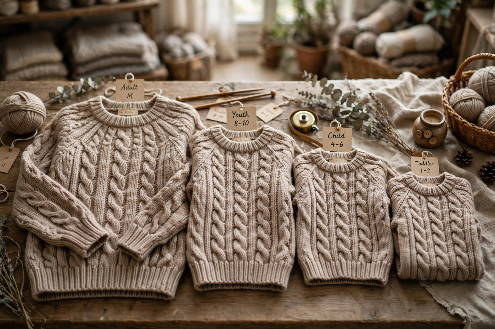
Én farge, ett garn — og hele familien på ett fotografi.
Like mønstre til hele familien — til bilder, feiringer og bare for gleden av «vi er et lag».
Mamma, pappa, barn
Gensere eller luer i samme fargeskala og mønster til hele familien. Størrelser — fra de minste til bestefar; mønsteret skaleres til hver enkelt ting.
Par — ting til to
To skjerf, to luer eller votter «for to» — til årsdag, bryllup eller bare sånn, uten anledning.
17Til kjæledyrene
Hunder fryser også om vinteren — særlig små og korthårede.
Gensere etter kjæledyrets mål
Strikkes etter tre mål: rygglengde, bryst- og halsomkrets. Hemmer ikke bevegelsen, er lette å ta på, og tåler vask uten å klage.
fra 300 krLette vester
Til sphynxer, valper og eldre dyr som trenger ekstra varme hjemme og på tur.
fra 250 kr18Strikkede leker
Bamser, harer og pinnsvin som blir klemt i årevis og gitt videre til de yngre.
Lekene strikkes av mykt, allergivennlig garn, med broderte (ikke påsydde) øyne — trygt for de aller minste. Fyllet er moderne og allergivennlig. Hver leke kan få sin egen «karakter»: farge, et lite skjerf, en brodert navnebokstav.
fra 280 kr19Til høytider og begivenheter
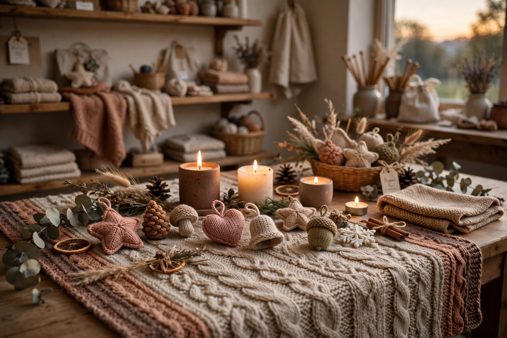
En fest bygges av små ting, laget på forhånd og med kjærlighet.
Til dåp og det første året
Dåpssett, tepper «til hjemkomsten» og små tøfler i gaveeske. Ting som tas vare på i familien.
Skjøre ting til bruden
Håndlagde sjal og stolaer i blondestrikk — over skuldrene, til fotografering og som et minne om dagen.
Et teppe med historie
Et stort teppe til en rund dag: farger og mønstre med mening nettopp for dette mennesket kan strikkes inn. Bestill 1–2 måneder i forveien.
20For bedriftskunder
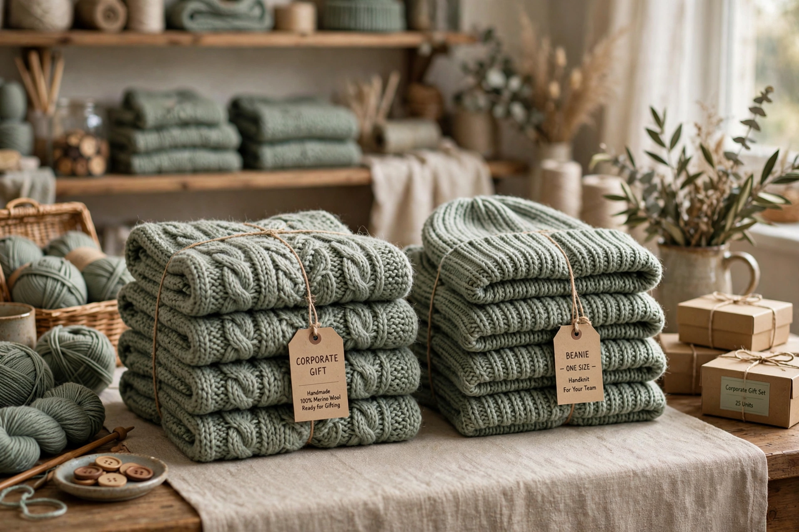
Like — men hvert enkelt er strikket for hånd. Det merker bedrifter.
Varme gaver til ansatte og partnere som ikke havner i skrivebordsskuffen: ullsokker, luer og skjerf i bedriftens farger.
- fra 10 like produkter — egne betingelser;
- fargene tilpasses deres visuelle profil;
- hvert produkt — med et kort og, om ønskelig, mottakerens navn;
- til nyttårsbestillinger åpner påmeldingen i september — håndarbeid lages ikke over natten.
21Mesterklasser og opplæring
Et håndverk lever så lenge det gis videre.
De første maskene
En individuell time: hvordan man holder pinnene, legger opp masker og strikker den første tingen — et skjerf man ikke skammer seg over å bruke.
Mønstre og teknikker
Fletter, jacquard, raglan ovenfra, pen montering. Vi går gjennom nettopp den teknikken som ikke vil seg etter oppskriftene.
Form og pris for timene avtales personlig — skriv via kontaktskjemaet hva du vil lære.
22Slik pakker vi gaver
Inkludert i bestillingen
Krafteske eller papirpose, silkepapir, hyssing og en kvist lavendel. Et kort med noen ord fra mesteren.
Fra deg
Vi skriver kortet med din tekst og sender gaven rett til mottakeren — uten prislapper og unødvendige papirer. Overraskelsen forblir en overraskelse.
23Verkstedets palett

Vottene venter ved døren. Hendene som skal ta dem på, sover ennå.
Naturlige og rolige
Krem, grå stein, mose, fjordens dype blå. Farger som aldri blir kjedelige og passer til hele garderoben.
Varme aksenter
Terrakotta, sennep, burgunder, rust. For dem som liker at tingen er synlig og glad.
Fant du ikke fargen din? Garn bestilles til din bestilling — send en fargeprøve eller et fotografi, så finner vi det nærmeste vi kan.
24Bestillingskalender
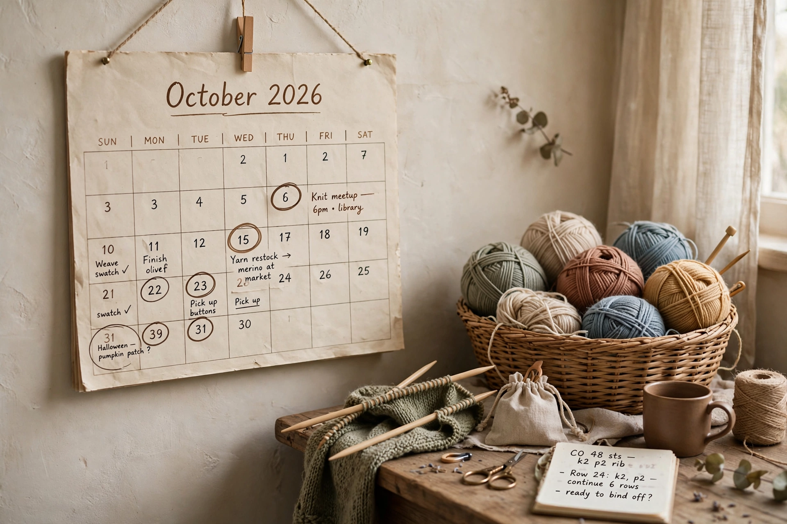
Datoer i kalenderen er løfter. Vi skriver dem ned og holder dem.
Håndarbeid liker god tid. Her er ærlige peilemerker på når det er best å bestille:
| Anledning | Bestill senest | Hva vi rekker |
|---|---|---|
| Jul og nyttår | oktober — november | Gensere og sett; i desember — bare små ting |
| Bursdag | 2–3 uker før | Nesten alt, unntatt store tepper |
| Et barn blir født | 2 uker før | «Til babyen»-sett og tepper |
| Bryllup | 1–2 måneder før | Sjal, stolaer, par — ting til to |
| Til vinteren for deg selv | september — oktober | En genser til den første kulden — akkurat i tide |
25Strikking og helse
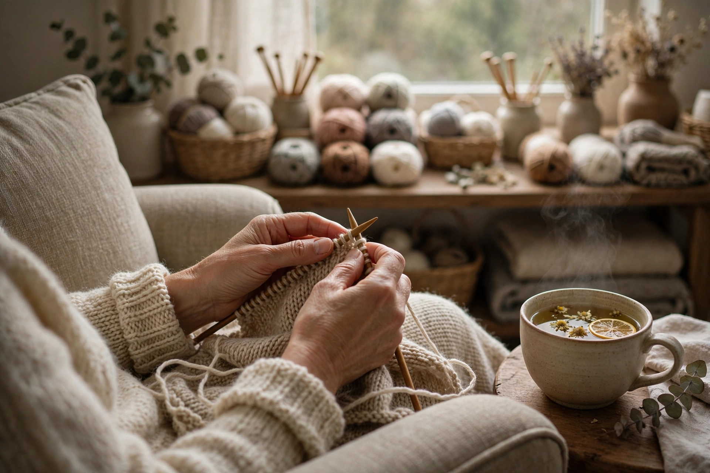
Hendene arbeider. Hodet hviler. Pusten blir jevnere av seg selv.
Litt om selve håndverket — hvorfor strikking ikke går av moten på hundrevis av år:
- Ro: de rytmiske maskebevegelsene virker som meditasjon og hjelper å koble om etter en tung dag;
- Smidige fingre: finmotorikken holder leddene i hendene bevegelige;
- Klart hode: å telle masker og lese mønstre er gymnastikk for oppmerksomheten og hukommelsen;
- Synlig resultat: i en verden av skjermer gir en ting man kan ta på og gi bort en særlig følelse av fullføring.
Derfor bærer hver ting fra butikken også med seg mesterens gode humør. Det er bevist: i dårlig humør blir det ingen strikking.
26Strikkerens lille ordbok
| Ord | Hva det betyr |
|---|---|
| Jacquard | Fargemønster som strikkes med flere tråder samtidig — de velkjente «skandinaviske» snøfnuggene og reinsdyrene |
| Fletter (aran) | Voluminøse maskeflettinger; de kom fra de irske øyene, der hvert mønster var en families signatur |
| Raglan | En måte å strikke en genser ovenfra uten sømmer på skuldrene — sitter særlig pent |
| Våt varmebehandling | Tingens siste «frisyre»: vask, tørking i fasong og lett damp |
| Hespe og nøste | Formene garnet lever i før det blir til en ting |
| Prøvelapp | En liten strikket firkant på 10×10 cm: etter den telles maskene, slik at tingen sitter nøyaktig etter mål |
27Våre prinsipper
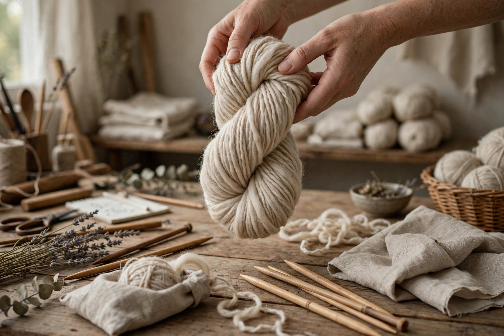
Naturlig garn, trepinner, ingen overflødige ord og materialer.
Ærlige tidsfrister
Bedre å oppgi en reell frist enn å love det umulige. Er køen lang — sier vi det rett ut og foreslår alternativer.
Ærlige priser
Prisen består av garnet og arbeidstimene. Ingen påslag «for merket»: du betaler for materialet og mesterens hender.
Foto før sending
Den ferdige tingen fotograferer vi og sender til deg før den sendes. Ingen overraskelser i pakken — unntatt de hyggelige.
En ting kan tas opp igjen
Er noe galt med passformen eller stellet etter måneder? Skriv til oss. Håndarbeid er en relasjon, ikke én transaksjon.
28For faste kunder
For dem som kommer tilbake — en særlig holdning:
- målene dine og favorittfargene oppbevares i verkstedet — en ny bestilling gjøres på to meldinger;
- prioritet i køen før høytidene for dem som har bestilt før;
- små gleder uten anledning: til nye bestillinger — et par hjemmesokker eller en leke til den lille i gave, etter avtale;
- familiesett til barn som vokser: vi strikker videre og forlenger ting barnet har vokst fra — billigere enn en ny ting.
29Overraskelsesbestilling: gi i hemmelighet
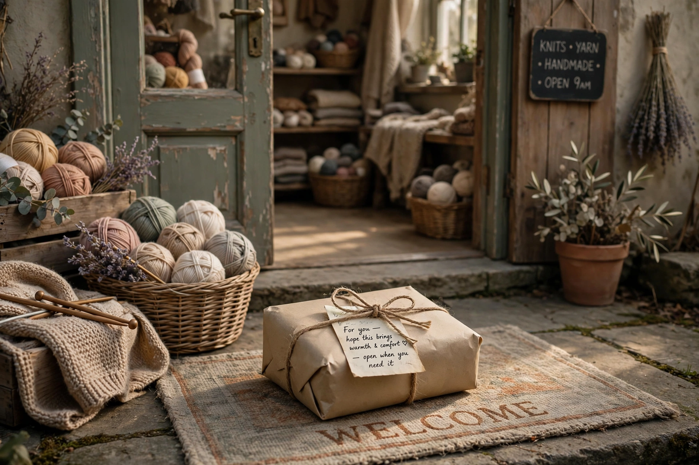
En gave som ikke engang mottakeren vet om. Før døren åpnes.
Størrelsen — umerkelig
Vi forteller deg hvordan du finner størrelsen på lue, sokker eller genser uten å røpe overraskelsen: etter en gammel ting mottakeren har
Vi strikker i stillhet
Ingen merknader og ingen brev til mottakeren. Foto av den ferdige tingen — bare til deg
Levering til mottakeren
Vi sender rett til festens adresse, med et kort fra deg og uten prislapp
30Kontakt oss
Vi svarer i løpet av dagen. Ingen spam — bare en samtale om plagget ditt.
Skriv til Nadia 💌
En bestilling, et spørsmål, et bilde av en ting som skal repareres, eller bare en tilbakemelding — fyll ut skjemaet, så kommer brevet rett til Nadias e-post:
Nadia svarer personlig, vanligvis i løpet av en dag eller to.
31Mesterens ord
Takk for at du er her. Har du kommet til disse linjene — da er vi på samme vei: du tror også at ting kan være langsomme, ærlige og varme.
Skriv til meg — via skjemaet eller med et vanlig brev. Fortell hva du vil ha strikket, og til hvem. Resten finner vi ut sammen, uten hast. Din Nadia. 🧶
32Månedens produkt
Kveld. Den første snøen utenfor vinduet. På stolryggen venter en genser.
Genseren «Nord»
Det finnes ting man ikke bruker — man bor i dem. Denne genseren strikkes langsomt, rundt, uten en eneste søm på skuldrene, av ren ull som lukter eng og regn. Mønsteret — snøfnugg og stjerner, som klippet ut av papir i barndommen.
Den tas på i den første snøen, når byen blir stille og vinduene gule. I den går man etter brød og i fjellet, sitter ved peisen og møter soloppganger på verandaen. Den går aldri av moten, fordi den aldri var på moten: den er bare varm, ærlig og ens egen.
Denne måneden følger det med et par sokker i samme tone til hver «Nord» — av samme garnparti, strikket i de samme stille kveldene.
fra 1 500 kr33Gavekort
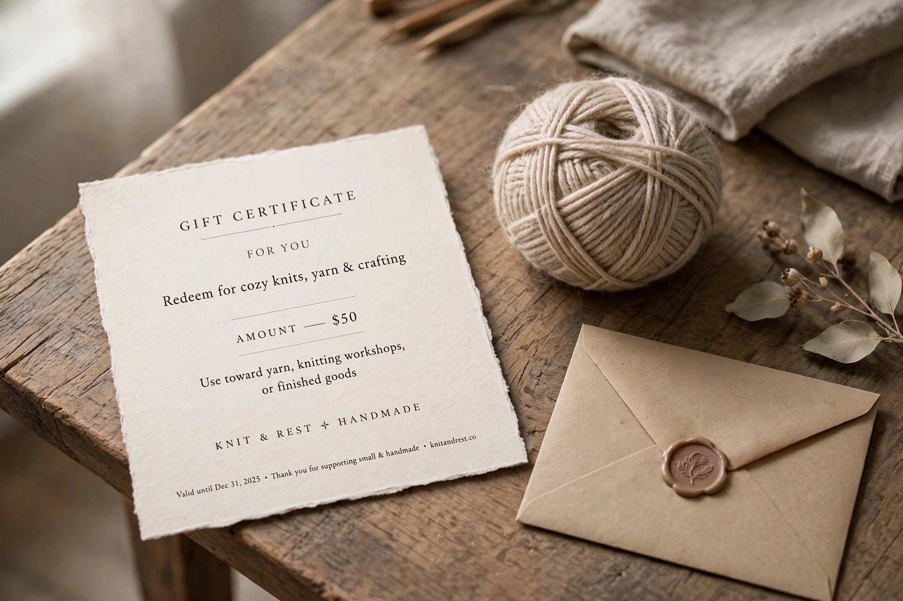
Et gavekort kommer aldri for sent. Og tingen det brukes på, blir likevel strikket for hånd.
Noen ganger er den beste gaven ikke en ting, men muligheten til å velge selv. Et gavekort er et løfte om varme som mottakeren gjør om til en genser, et sjal eller et par sokker når hun eller han vil, og i akkurat den fargen som drømmes om.
Vi gjør det til et vakkert kort, skrevet for hånd, eller et stille brev på e-post — slik det er roligst for deg. Gavekortet har ingen frist: håndarbeid liker ikke hast, og å velge tingen er også en del av gleden. Dekker ikke gavebeløpet hele tingen, kan man bare betale mellomlegget; blir det noe til overs — venter resten til neste bestilling, om så til neste vinter.
En slik gave bommer ikke på størrelsen. Den bommer i det hele tatt ikke: den sier — «velg varme til deg selv».
34Sett til hjemkomsten fra fødeavdelingen
Et teppe, en lue og små tøfler. Alt er lite. Alt er for første gang.
Den første dagen hjemme lukter melk, vasket tøy og en stillhet der alle går på tå hev. Til denne dagen strikker vi et sett: et mykt teppe, en lue og små tøfler i samme fargeskala — av babymerino og bomull som ikke stikker og ikke er redd for hyppig vask.
I et slikt teppe tar man det første bildet. Det tas vare på i årevis etterpå — sammenbrettet, i en skuff med de viktigste tingene, og tas frem når barnet har vokst til, bare for å holde det i hendene og undre seg over hvor lite alt var.
fra 700 kr35Hvordan velge størrelse til en gave
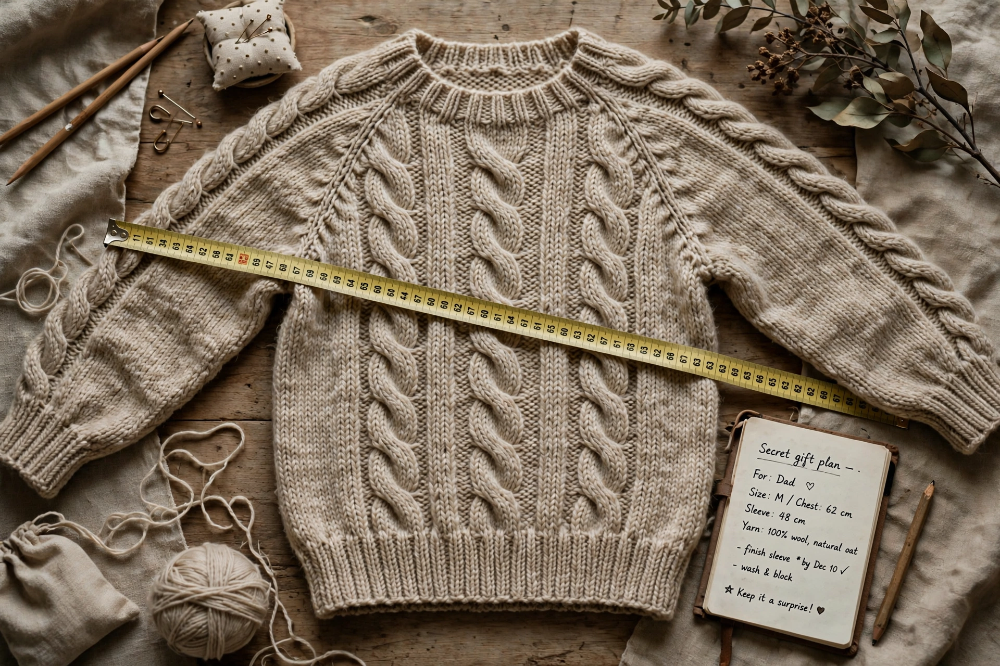
Størrelsen på favorittgenseren måles på fem minutter, og uten et eneste spørsmål.
Rolig, og helt uten panikk: de fleste strikkede gaver trenger overhodet ingen nøyaktige mål.
Ting som ikke kan gå galt
Skjerf, snood, teppe, hjemmesokker — de trenger ingen størrelse, de trenger farge og mykhet. Er gaven en overraskelse, begynn med dem: de passer alltid perfekt, fordi de sitter på stemningen.
Ett mål — og alt er avgjort
For en lue holder det med hodets omkrets, og den røper enhver gammel lue mottakeren har. For sokker — fotens lengde: den forteller innleggssålen i skoen. Ett tall, tatt i en rolig stund, — og plagget sitter som støpt.
36Sjeldent garn til din bestilling
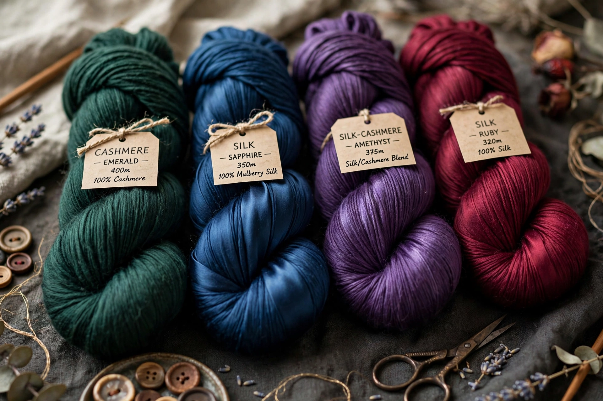
Slikt garn ligger ikke på hyller. Det kommer for ett menneske.
Noen ganger begynner et plagg ikke med et mønster, men med én eneste nyanse, sett i en drøm eller på et gammelt fotografi: fargen på havet i september, fargen på bestemors sjal, fargen på himmelen før snøen.
Til slike bestillinger henter vi garn spesielt: kasjmir, merino med silke, jakull, sjeldne fargestoffer fra små fabrikker. Det reiser til oss i ukevis — og det er helt normalt. Et plagg som fødes så langsomt, tjener siden i årtier, og hver maske husker hvem alt ble satt i gang for.
Send et bilde av fargen, eller fortell om den med ord. Vi finner så nært som garn kan komme.
37Sjal og stolaer

Et sjal tørker ved vinduet, og lyset går gjennom mønsteret som gjennom et glassmaleri.
Sjalet er det eldste og mest tålmodige av alle strikkede plagg. Det strikkes i ukevis, maske for maske, til mønsteret ligner frostroser på glass. Det finnes ikke én overflødig tråd i det: bare luft, varme og mønster.
Til hverdags
Varme stolaer av merino og alpakka — over skuldrene om kvelden, når huset sover og du vil sitte litt til med en bok.
fra 600 krTil fest
Hullede sjal av mohair med silke — nesten vektløse. De bæres i bryllup og på høytider, og tas siden varsomt vare på i papir, slik man tar vare på brev.
fra 900 kr38Vester og ermeløse plagg
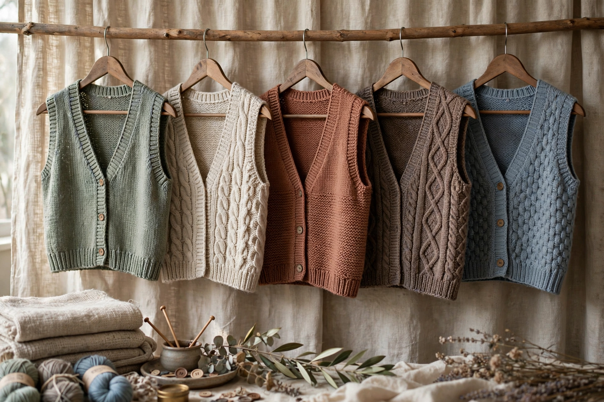
En vest er varme som ikke hindrer hendene i å leve sitt eget liv.
Vesten er plagget til folk som gjør alt med hendene. Den varmer rygg og bryst, og lar armene være frie: til verkstedet, hagen, fisketuren, til bestefar som i en alder av åtti fortsatt ikke sitter stille.
Vi strikker dem tette, med dype lommer, i rolige farger — «som før i tiden», bare med bedre passform. En slik vest bæres ikke til fest. Den bæres hver dag, og i det ligger dens fest.
fra 800 kr39Et hjem som omfavner

En fest du kan ta på deg: ører, haler og ikke ett eneste misfornøyd ansikt.
Et hjem blir et hjem ikke av møbler, men av små ting som hender berører.
Servietter og løpere
Av bomull, heklet og strikket. Et bord dekket med en slik serviett ser straks ut som om noen er ventet i huset.
Grytekluter og underlag
Tette og doble, i muntre kjøkkenfarger. En varm tekanne, en stille kveld, lukten av bakst — av slike minutter består hyggen.
Strikkede kurver
Til garn, til småting, til badet. I dem ser selv rot ut som en plan.
40Små hjemlige ting
Damp over koppen, stillhet, og ingen steder å skynde seg til.
Koppetrekk
Te i et slikt trekk avkjøles langsommere, og koppen brenner ikke håndflaten. En liten ting som gis «bare sånn» — og som brukes hver dag.
fra 90 kr«Klær» til tekannen
Som i barndommen: en tekanne i strikket trekk trekker lenger og står på bordet som en fullverdig deltaker i testunden.
fra 180 kr41Fra ditt eget garn
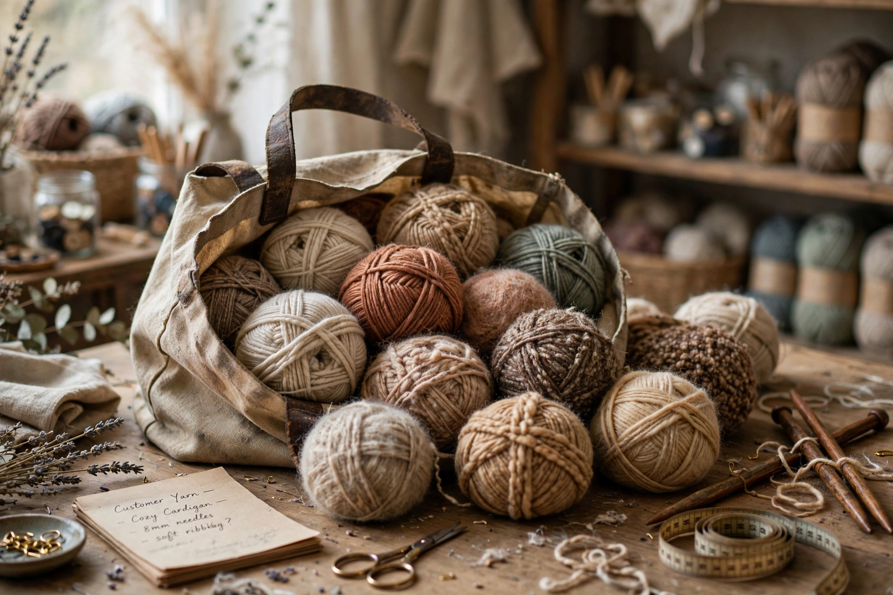
Garnet ditt vet allerede hva det vil bli. Vi bare hjelper det.
I nesten hvert hjem finnes det en skuff der nøster har ligget i årevis «til en gang». De ble kjøpt med håp, tatt vare på med kjærlighet og aldri rørt. Det er ingen bebreidelse — det er et utsatt plagg som bare ventet på sin time.
Send dem til oss. Vi ser på sammensetning og mengde, sier ærlig hva som kan bli av det — et skjerf, en vest, barneklær — og strikker det. Du betaler bare for arbeidet, og garnet blir endelig det det drømte om å bli da det ble valgt i butikken.
Noen ganger ligger det en historie i slike nøster: mamma valgte dem, de ble brakt med fra en reise. Et plagg strikket av dem bærer denne varmen dobbelt.
42Redning av plagg etter vask

Varmt vann, et håndkle og tålmodighet. Millimeter for millimeter — tilbake i form.
Ikke skynd deg å ta farvel. Strikkede plagg kan tilgi feil — hvis man går rolig frem.
Plagget har krympet
Det hender: du tar opp av vannet ikke en genser, men barnekopien av den. Noen ganger kan den reddes — varmt vann, et mildt middel, tålmodighet og langsom strekking etter formen, millimeter for millimeter. Send et bilde og garnets sammensetning: vi sier ærlig, og uten løfter, om det finnes håp. Noen ganger — gjør det det.
Plagget har strukket seg
Det lar seg oftere redde. Riktig vask og tørking på et håndkle, i stillhet og uten radiator, gir formen tilbake bedre enn noen ord. Og strikk som er lei av å holde, strikker vi rett og slett på nytt — og plagget sitter igjen som den første dagen.
43Fotoreportasje underveis
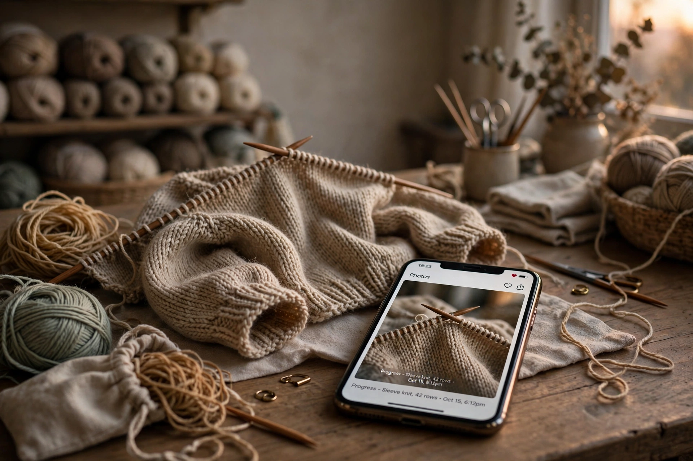
Ventingen skal ikke være stillhet: her er garnet, her er prøven, her er halve veien.
Når et plagg strikkes til deg, skal ventingen ikke være stillhet. Om du ønsker det, sender vi bilder underveis: her er garnet som er valgt til deg. Her er en prøve — ti ganger ti centimeter av den fremtidige genseren. Her er halve arbeidet, her er et erme, her ligger det ferdige plagget og tørker etter vask.
Særlig elsker de som bestiller en gave på avstand dette: du ser overraskelsen bli til, kveld for kveld, og når den sendes, kjenner du den bedre enn om du hadde kjøpt den ferdig i en butikk.
44En gave til en kollega

Tre ting i samme farge ligger ved siden av hverandre og sier ingenting om hvor varme de blir til vinteren.
Nøytralt og varmt
Det finnes gaver som ikke setter noen i forlegenhet: sokker, en lue, et skjerf i en rolig farge. De gis til sjefen og til en venn på kontoret med samme letthet — fordi varme aldri blir for personlig.
Et sett i samme fargeskala
Lue, skjerf og votter, strikket av samme garn, ser ut som en gjennomtenkt tanke. Og det er nettopp den beste gaven til en kollega: ikke dyr, men gjennomtenkt.
fra 1 100 kr45Til hytta og hagen
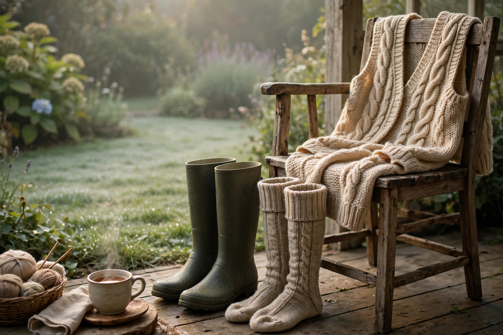
Dugg, drivhus og te som blir kaldere raskere enn du rekker å drikke den.
Det finnes klær for byen, og det finnes klær — for tidlige morgener med dugg, for drivhuset, for verandaen der teen blir kald raskere enn du rekker å drikke den. En vest det ikke er synd på. Sokker litt høyere, nedi støvlene. En lue som har sett mer enn én høst.
Til disse plaggene tar vi den ærligste ullen — praktisk, som ikke viser skitt, og som ikke krever forsiktig behandling. Den er ikke redd for arbeid. Den er strikket for det.
Kontakt
Vi svarer i løpet av dagen. Ingen spam — bare en samtale om plagget ditt.
Skriv til Nadia 💌
En bestilling, et spørsmål, et bilde av et plagg til reparasjon eller bare en tilbakemelding — fyll ut skjemaet, så kommer brevet rett til Nadias e-post:
Nadia svarer personlig, vanligvis i løpet av én til to dager.
46Til reisen

Lettere enn en bok — og redningen på hvert fly og hvert tog.
Kompakt varme
En tynn snood av merino og et par sokker veier mindre enn en bok, og redder deg på hvert fly, hvert tog og i hver ventehall der klimaanlegget ikke kjenner nåde. Veien blir kortere når føttene er varme.
Et teppe til bilen
Et lite teppe bor i bagasjerommet og venter på sin time: en piknik i veikanten, venting på en ferge, et barn som har sovnet i baksetet. En ting man ikke tenker på — før den redder kvelden.
fra 700 kr47Til turer og sport
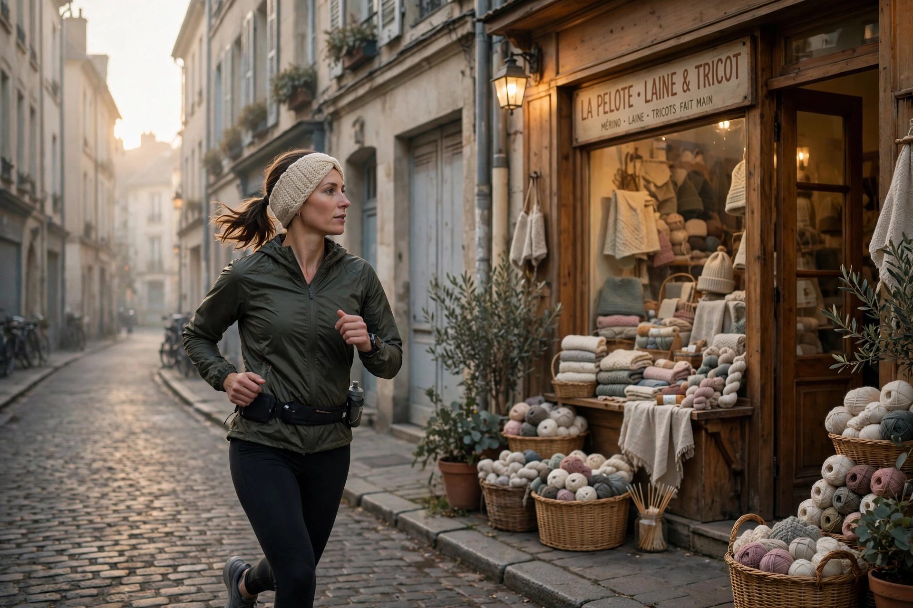
En morgenrunde gjennom den sovende byen — i stillhet og i varme.
Bevegelse i kald luft er en egen glede, når man er riktig kledd: varmt, men ikke hett; tørt, men ikke tett.
Pannebånd og luer til løping
Merino leder bort fukt og holder ørene varme i vinden. En morgenrunde gjennom den sovende byen — i stillhet og i varme.
Leggvarmere
Til dans, yoga og bare utenpå skoene: leggen og ankelen elsker varme ikke mindre enn halsen.
Pulsvanter
Fingrene er frie — til båndet, nøklene, telefonen; hendene er likevel varme. Turen avbrytes ikke av «vent litt, jeg skal ta av votten».
48Til tvillinger

To sett. Én forskjell — fargen på dusken. Hver av dem har noe som bare er sitt.
To like små — og to nesten like sett. Nesten — fordi det i hvert av dem finnes én liten forskjell: fargen på dusken, en brodert bokstav, en stripe på tøffelen. For ikke å forveksle dem. For at hver av dem fra første dag skal ha noe som bare er sitt.
Foreldre til tvillinger sier at slike ting siden tas vare på i par — og etter mange år forteller de historien bedre enn fotografier.
49Klær til dukker

Også en kjær dukke har klær etter sesongen.
Hver kjær dukke bør ha klær etter sesongen — det vet enhver bestemor og ethvert barnebarn. Kjoler, gensere og ørsmå luer strikkes etter målene til akkurat din dukke: send høyden og omkretsen hennes, resten finner vi på sammen med den lille eieren.
Dette er små ting med stor mening: de lærer omsorg bedre enn noen ord.
fra 120 kr50Buketter som ikke visner

Tulipaner av garn står i vasen og ber ikke om vann. Bare av og til — om å bli sett på.
Strikkede blomster faller ikke av på fredag. De står i uker, sesonger, år — på bordet til den du ga dem til, og minner stille om deg hver eneste dag.
De gis til dem som er allergiske mot pollen. Til dem som reiser bort og ikke kan vanne levende blomster. Til dem som rett og slett liker at skjønnheten ikke tar slutt. Én blomst, en liten bukett eller en hel komposisjon — i en vase som også kan velges som gave.
fra 150 kr per blomst51Festpynt hele året

Pynt som ikke knuser. Den henges på treet hvert år, og hvert år minnes man noe godt.
Jul
Strikkede kuler, stjerner og strømper til gaver på peishyllen. De overlever barn, barnebarn og mer enn ett juletre — og blir det der «som i barndommen», bare nå for de neste.
Påske og vår
Strikkede egg, høner og lette servietter i vårens farger. Et bord dekket til fest, langsomt og med kjærlighet, lukter av hjem.
52Ting med navn
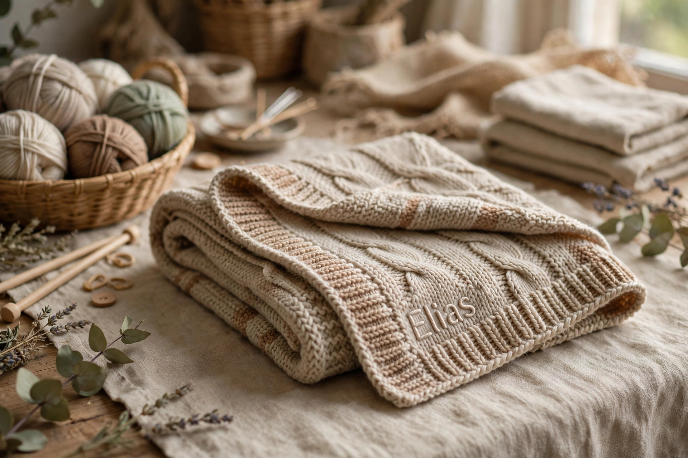
En brodert bokstav endrer alt: teppet blir rett og slett noens eget.
En brodert bokstav endrer alt. Teppet blir «Misjas teppe». En genser med bryllupsdatoen i mønsteret slutter å være et klesplagg og blir et dokument — bare varmt og mykt.
Vi strikker inn eller broderer barnets navn, initialer, en minnedato — bokstav for bokstav, langsomt, slik man signerer et brev for hånd. Slike ting gir man ikke bort og kaster ikke. De tas vare på, gis videre, og man forteller om dem: «dette ble strikket da du ble født».
53Slik oppbevarer du strikk om sommeren

Sommeren er tiden da ulltingene sover. Ved siden av ligger lavendel.
Sommeren er tiden da ulltingene sover. Legg dem riktig bort, så våkner de til høsten som nye.
- Før oppbevaring er det best å vaske plagget eller i det minste lufte det: møll velger nettopp det som er brukt.
- Brett sammen — ikke heng opp: kleshengere strekker strikket stoff i løpet av én sesong.
- Ved siden av — lavendel, sedertre eller et lite såpestykke i en bomullspose: stille, med duft av hjem, og det holder møllen unna.
- Ta dem frem én gang i løpet av sommeren og luft dem i frisk luft. Ting, akkurat som mennesker, liker å bli husket.
- I verkstedet kan du bestille oppbevaringsposer i bomull — enkle, pustende, i toner som passer til tingene dine.
54Først — en prøvelapp
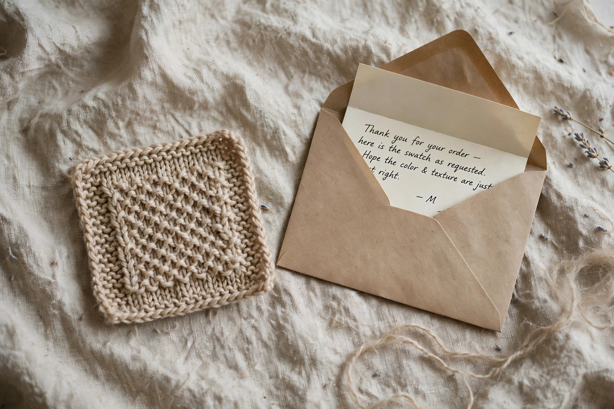
Ti ganger ti centimeter av fremtiden — den kommer til deg i et vanlig brev.
En stor ting bør ikke begynne med en stor risiko. Hvis du er i tvil om fargen, mønsteret eller følelsen av garnet, strikker vi en liten prøvelapp — ti ganger ti centimeter av fremtiden — og sender den til deg i et vanlig brev.
Du legger den inntil kåpen din. Holder den i hendene morgen og kveld, i ulikt lys. Lever med den en dag eller to — og beslutningen kommer av seg selv, rolig og uten tvil. Prisen på prøvelappen regner vi inn i prisen på plagget når du bestiller det.
55Bestilling uten skjema
Skjemaene på denne siden er til for enkelhets skyld, ikke i stedet for en samtale. Hvis du foretrekker det på den gamle måten, skriver du bare et vanlig brev til nadandre@live.com: med dine egne ord, i hvilken rekkefølge du vil — hva du ønsker, til hvem og til hvilken dag.
Det er et menneske som svarer, ikke et program: det samme mennesket som senere skal holde strikkepinnene. Noen ganger er brevvekslingen om en fremtidig ting allerede halve varmen i den.
56Hva prisen består av
Ingen hemmeligheter og ingen liten skrift. Prisen på en håndlaget ting er garn og tid. Nesten ingenting mer.
| Del av prisen | Hva det er |
|---|---|
| Garn | Den nøyaktige prisen på nøstene til akkurat din ting. På forespørsel viser vi kvitteringene — det er ingenting å skjule. |
| Arbeid | Timer ved strikkepinnene. En genser er førti til åtti timer med stille arbeid: flere uker med kvelder. |
| Ferdigstilling | Montering, vask og forming, knapper og tilbehør, og innpakningen som tingen reiser til deg i. |
| Levering | Etter portoens faktiske pris. Ikke én krone ekstra. |
Derfor kan en håndlaget ting ikke koste det samme som en fabrikklaget. Men deler du prisen på årene den vil tjene deg, viser den seg å være billigere enn nesten alt annet i garderoben.
57Hvis garnet tar slutt midt i arbeidet

Garnet tok slutt — og tingen fant sin egen vri.
Det skjer i ethvert strikkeliv: tingen er nesten ferdig, bare ett erme gjenstår — og garnet er borte. Og i butikkene finnes det ikke lenger. Motet synker — akkurat til det øyeblikket en utvei viser seg.
Send oss resten av nøstet og et bilde av tingen. Vi finner et garn som ligger så nær som mulig i farge og karakter — og finnes det ikke et nøyaktig treff, finner vi på en vakker vri: kontrastermer, en stripe, en kant i en annen nyanse. Svært ofte er det nettopp denne tvungne vrien som blir det man senere elsker tingen mest for.
58Ting til fotograferinger
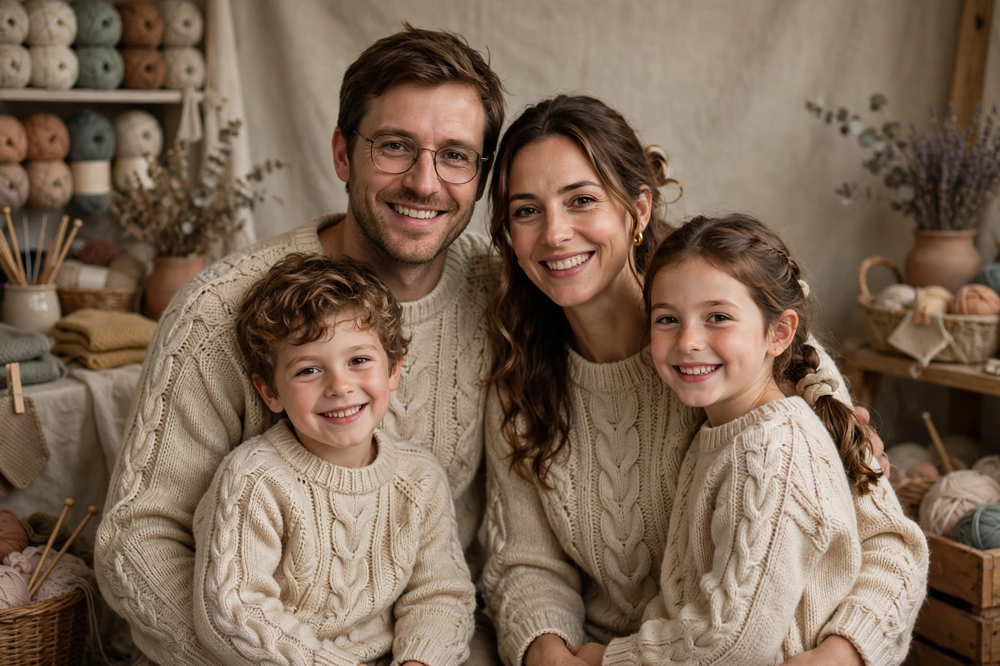
Like gensere. Forskjellige mennesker. Én historie for alle.
Fotografier holder mennesker unge, og tingene på dem — varme. Like gensere på hele familien. En nyfødt som sover i et strikket teppe. En hund i en genser som matcher eierens.
Fortell oss om fotograferingen på forhånd: vi velger farger som spiller godt sammen og med bakgrunnen, og rekker å strikke alt til den avtalte dagen. Og etterpå lever disse tingene videre sitt vanlige liv — og hver gang du tar dem på, vil du huske den dagen.
59Farger på skjermen
Et ærlig ord om farger: skjermen lyver litt. Det samme nøstet er blått på telefonen, nesten fiolett på datamaskinen, og i virkeligheten, i dagslys, viser det seg plutselig å være dypt som vann.
Derfor fotograferer vi garnet i vanlig dagslys for viktige bestillinger, ved siden av kjente gjenstander. Og er beslutningen alvorlig, finnes prøvelappen (avsnitt 54): en liten firkant av ekte garn som kommer til deg i et brev og forteller hele sannheten om fargen.
60Små bestillinger — med stor kjærlighet
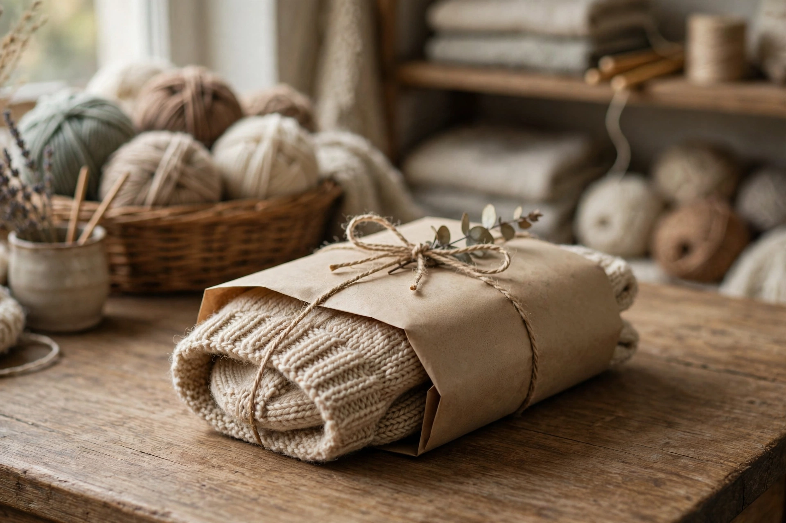
Ett par sokker — og like mye oppmerksomhet i dem som i en genser.
Ett par sokker. Ett trekk til et krus. Én leke til barnebarnet som bor i en annen by. Det finnes ingen bestillinger som er «for små» — det finnes mennesker som trenger akkurat denne lille tingen nå.
Halvparten av våre faste kunder begynte en gang med ett par sokker. Små ting strikkes på de samme stille kveldene og med den samme oppmerksomheten — de blir bare ferdige litt raskere.
Tilbakemelding
Vi svarer i løpet av dagen. Ingen spam — bare en samtale om plagget ditt.
Skriv til Nadia 💌
Bestilling, spørsmål, et bilde av en ting til reparasjon eller bare en tilbakemelding — fyll ut skjemaet, så kommer brevet rett til Nadias innboks:
Nadia svarer personlig, vanligvis i løpet av en til to dager.
61Og én gang til — skriv til Nadia
Vi svarer i løpet av dagen. Ingen spam — bare en samtale om plagget ditt.
Skriv til Nadia 💌
Bestilling, spørsmål, et bilde av en ting til reparasjon eller bare en tilbakemelding — fyll ut skjemaet, så kommer brevet rett til Nadias innboks:
Nadia svarer personlig, vanligvis i løpet av en til to dager.
62Mesterens verktøy
Pinnene ligger på linstoffet og venter på kvelden, når det blir stille i huset.
Hvert garn har sine pinner. Bambus holder forsiktig på glatt silke. Glatt metall fører ullen lett. Varmt tre kjøler ikke fingrene på en lang vinterkveld.
I verkstedet finnes det flere dusin par, og hvert par kjenner sitt arbeid. Gamle pinner kastes ikke: de har sitt eget minne, og maskene glir jevnere av dem, som ord fra et velkjent språk.
63Hvorfor maskene blir jevne
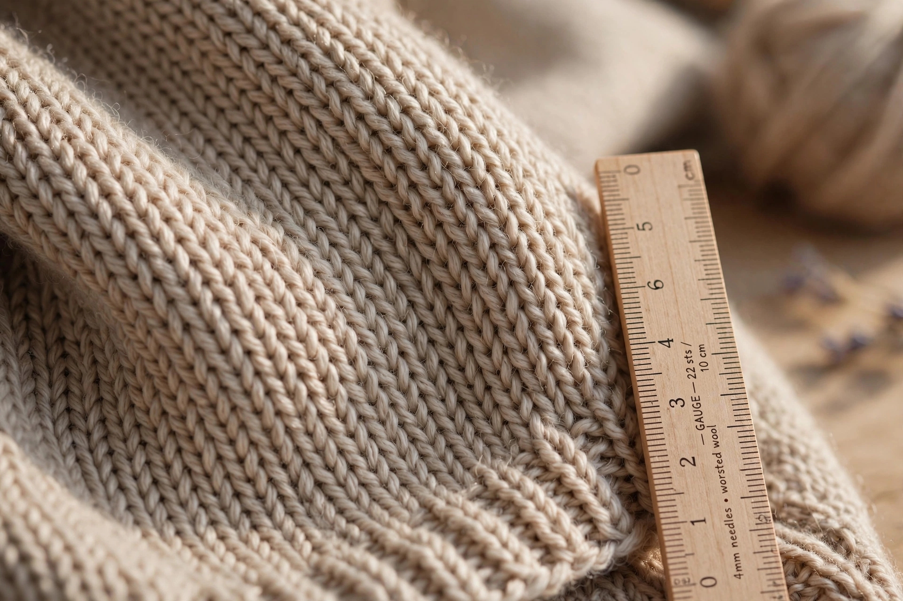
Ingen hemmelighet: en prøvelapp, telling av omganger og hender som kjenner tråden.
Ingen hemmelighet: før hver ting — en liten prøvelapp. Deretter telling av omganger, ikke på øyemål. Og en størrelse som kontrolleres underveis, mens tingen ennå kan rettes med én bevegelse.
Håndarbeid er også presisjon. Det gjøres bare ikke av en maskin, men av hender som gjennom tiår har lært å kjenne trådens spenning slik en musiker kjenner en streng.
64Gave til bestemor
To par hender over garnnøstene. De eldre velger fargen, de yngre suger til seg hvordan det gjøres: langsomt og med kjærlighet.
Sjal eller stola
Over skuldrene — hjemme med en bok, i teateret, på en kveldstur. En lett ting som holder rundt deg på dine vegne når du er langt unna.
Varme sokker og tøfler
Med myk, løs ribbekant, for føtter som blir mest slitne i løpet av dagen. Omsorg du kjenner hver kveld når du tar av deg skoene.
65Babytøfler: de første skoene
De får plass i én håndflate. Begge på én gang.
Babytøflene strikkes etter lengden på den lille foten, med litt ekstra rom — babyer vokser fortere enn garn tørker. Fargene går fra stille pasteller til klare farger, «som de voksne»: de første tingene har lov til å være festlige.
Et par babytøfler er den raskeste gaven til en nyfødt, og kanskje den mest langlivede: de brukes ikke lenge, men tas vare på resten av livet.
fra 150 kr66Kattene godkjenner
Sjefskontrolløren for kvalitet sjekker hvert teppe personlig. Som oftest i søvne.
Bor det en katt i huset, forblir et strikket teppe ikke ditt særlig lenge. Det er en lov eldre enn oss alle: katter finner den varmeste tingen i huset på én kveld og gjør den til sin — endelig og uten forhandlinger.
Derfor bestiller mange et teppe nummer to, litt mindre, et «katteteppe». Og til hjem med dyr anbefaler vi garn som rolig tåler hyppig vask: skjønnhet er skjønnhet, men livet går sin gang.
67Hetter og balaklavaer
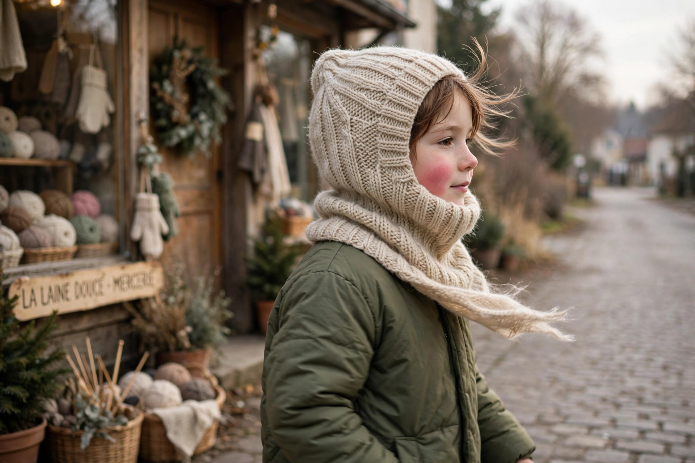
Ingenting glir, ingenting løsner, ingenting blir borte. Bare røde kinn.
En avtakbar hette i merino er en lue og et skjerf som har sluttet å krangle og blitt enige. Ingenting glir i vinden, ingenting løsner i farten, ingenting forsvinner i garderoben.
Foreldre setter særlig pris på dem: et barn i hette er beskyttet overalt, fra issen til brystet. Og voksne som går til fots om vinteren og kjenner prisen på vind fra fjorden.
fra 400 kr68Halsvarmere: varme uten volum
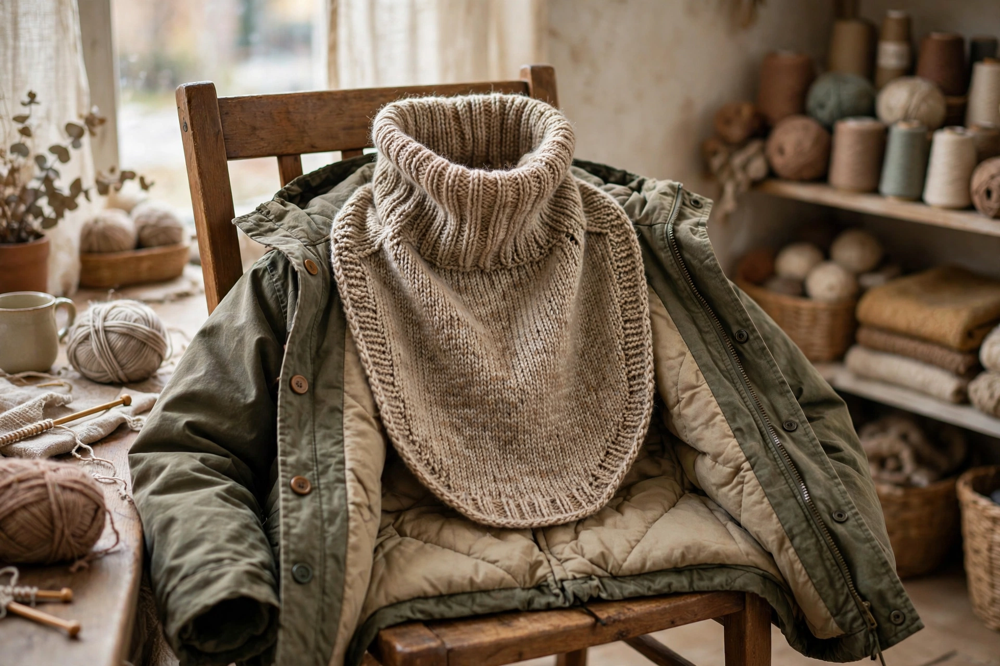
En stille ting: dekker hals og bryst — og krever ikke å bli rettet på.
En halsvarmer er en stille ting. Den dekker halsen og brystet under jakken, men skaper ikke ekstra volum, samler seg ikke i folder og krever ikke å bli rettet på.
Den elskes av sjåfører, syklister og alle som gjør seg klare i farten og kler på seg underveis. Tatt på om morgenen — og glemt til kvelden. Slik skal en god ting være.
fra 320 kr69Poncho

Poncho, veranda, te. Kvelden trenger ingenting mer.
En poncho trenger ikke å kneppes, tilpasses eller overtales til å sitte riktig. Sleng den over skuldrene — så finner den selv ut hvordan den skal ligge. I den er det like rolig for en spinkel jente som for bestefaren hennes.
Det er klær for langsomme timer: en kveld på verandaen, veien hjem, lenestolen ved peisen. En poncho roper ikke om seg selv. Den varmer bare — og det er nok.
fra 950 kr70Bolero og skuldervarmere
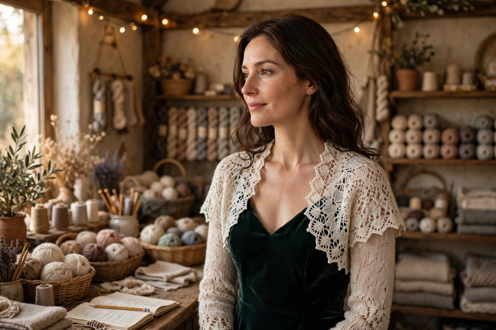
Den skjuler ikke antrekket, men fullfører det — slik siste linje fullfører et brev.
Noen ganger er kjolen fullkommen, men skuldrene fryser. Til slike kvelder finnes boleroen: en kort cape i blondestrikk som ikke skjuler antrekket, men fullfører det, slik siste linje fullfører et brev.
Skuldervarmere i mohair med silke veier nesten ingenting og kan brettes sammen til en håndflates størrelse — de tas med «for sikkerhets skyld» og bæres hele kvelden.
fra 550 kr71Sommertopper og lette bluser
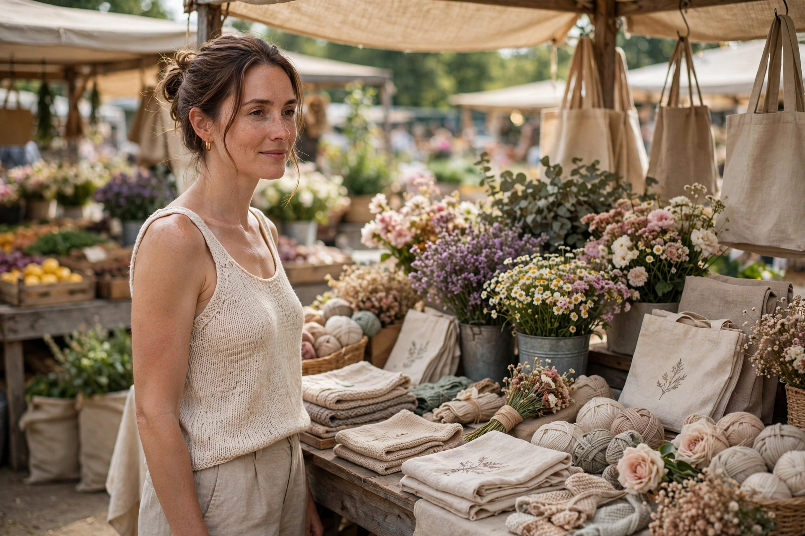
Morgen, marked, stoff varmet av solen. Sommeren bor også i slike ting.
Strikking handler ikke bare om vinter. Bomull og lin puster, blondemønster slipper luft og lys igjennom, og en håndlaget sommerting sitter slik ingen fabrikklaget ting sitter.
Slike topper brukes i årevis: de strekker seg ikke i løpet av en sesong og mister ikke utseendet etter vask. Morgen, marked, lukten av stoff varmet av solen — noen ganger er det nettopp i slike ting sommeren oppbevares.
fra 600 kr72Strikkede kjoler og skjørt

En kjole ved vinduet. Den vet allerede hvem den tilhører.
En kjole som er strikket etter kroppen, ligner ikke på noen kjole fra butikken. Den hverken henger eller strammer — den følger mennesket den er strikket til, slik en kjær vane følger henne.
Slike ting bestiller man ikke i hast. Først en samtale, mål, garnet mellom fingrene. Så uker med stille arbeid. Men deretter bæres kjolen i årevis — og hver gang litt annerledes, og hver gang passer den.
fra 1 800 kr73Vesker og ryggsekker
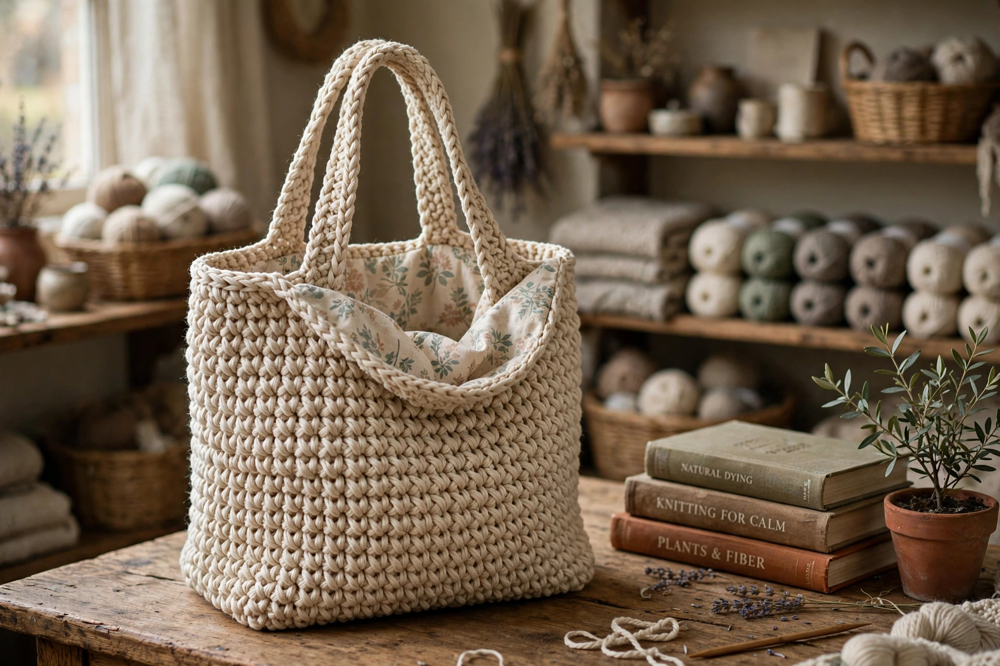
Den holder formen, karakteren og alt man legger i den.
En veske av fast bomull holder formen, karakteren og alt man legger i den. Inni er det fôr og en lomme til telefonen, så man slipper å lete på bunnen mens man står i kassen.
Slike vesker eldes vakkert: de sprekker ikke, de flasser ikke — de blir bare mykere og kjærere, som en favorittbok.
fra 350 kr74Etuier til alt
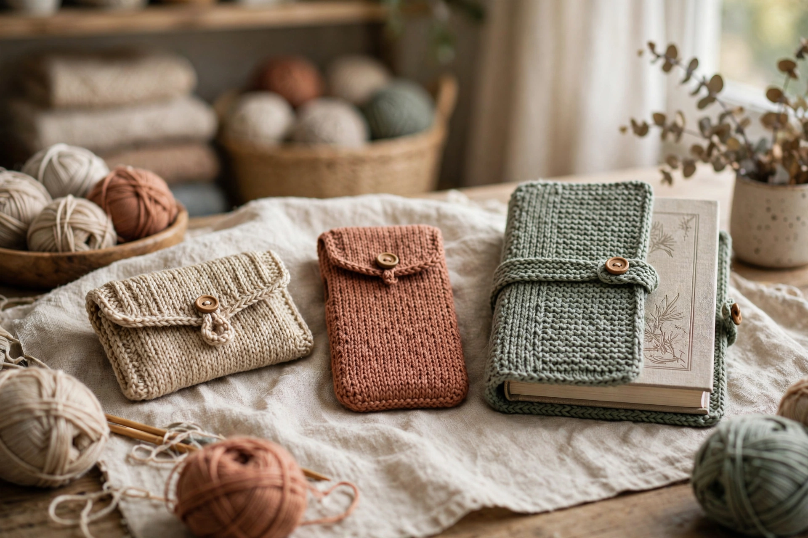
En telefon i et slikt etui finner man i vesken med følelsen — på varmen fra garnet.
Til briller og telefon
Et mykt strikket trekk beskytter mot riper og kulde. Og en telefon i et slikt etui finner man i vesken med følelsen — på varmen fra garnet.
fra 110 krTil bøker og nettbrett
Etuiet strikkes i nøyaktig din størrelse — til din bok, ditt nettbrett. Med klaff og en knapp det er godt å kneppe igjen, sakte.
fra 160 kr75Bokmerker for bokelskere
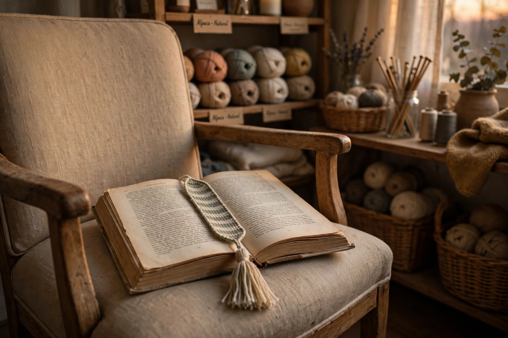
Det husker alle sidene der du sovnet.
Et tynt strikket bokmerke med dusk lever inne i boken i årevis. Det husker alle sidene der du sovnet, og alle sidene der du ikke fikk sove.
De bestilles ofte i sett — til seg selv og alle man deler bøker med. En liten gave som ikke roper om seg selv, men bare blir værende lenge.
fra 70 krTilbakemelding
Vi svarer i løpet av dagen. Ingen spam — bare en samtale om plagget ditt.
Skriv til Nadia 💌
En bestilling, et spørsmål, et bilde av noe som skal repareres eller bare en tilbakemelding — fyll ut skjemaet, så kommer brevet rett til Nadias e-post:
Nadia svarer personlig, vanligvis i løpet av én til to dager.
76Sokker til gaver — på peishyllen
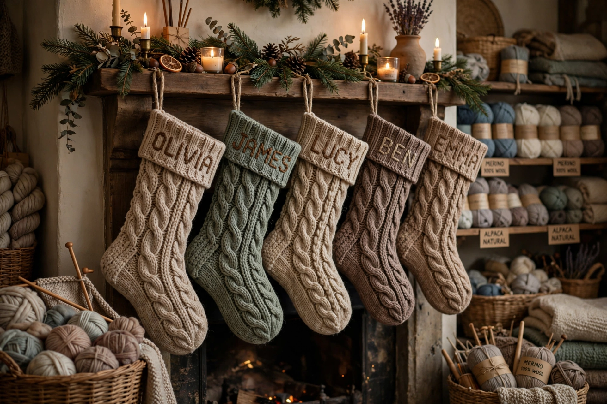
Sokken henger tom — og nettopp derfor full: av forventning.
En stor strikket sokk over peisen er et løfte om fest som synes langveis fra. I den gjemmes små gaver, og hver desembermorgen er det noen i huset som titter nedi — bare sånn, for sikkerhets skyld.
På hver sokk står et navn. Til barna, til foreldrene, til katten. Etter år tas disse sokkene frem fra boksen med juletrepynt, og huset dufter igjen av mandariner og forventning.
fra 290 kr77Til fiske og jakt
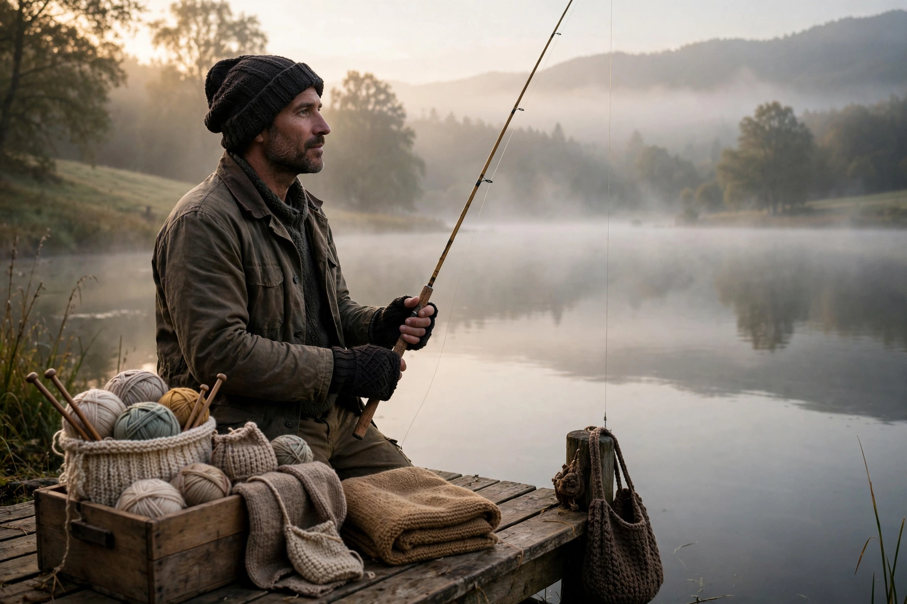
Tåke over vannet og lang venting ved hullet — det er for et slikt liv de er strikket.
På vannet og i skogen prøves klær raskt. Mørke farger som ikke viser skitt. Høye sokker, så det ikke trekker. En lue som ikke er redd for regn. Pulsvanter der hendene er frie til arbeidet.
Det gjør ikke vondt å ta disse tingene med i skogen — og det er deres verdighet: de er strikket ikke til hyllen, men til et liv med tåke over innsjøen og lang venting ved hullet.
78Til sykkel og motorsykkel
Vind i fart finner hver sprekk i klærne. En balaklava av tynn merino, en hals og leggvarmere lukker nettopp de stedene den når først.
Ingenting flagrer, sklir ned eller forstyrrer blikket på veien. Veien liker for øvrig at man tenker på den — og ikke på en frossen nakke.
fra 280 kr79Til musikere
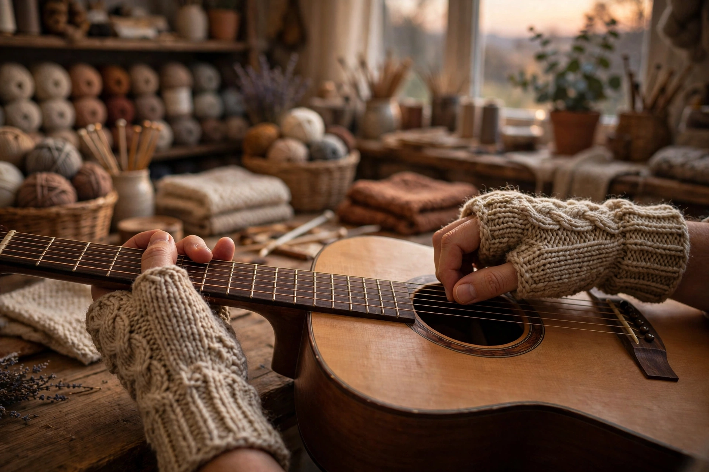
Musikken skal ikke vente på at hendene blir varme.
Kalde hender spiller dårligere — det vet alle som har øvd i en uoppvarmet sal eller opptrådt ute i november. Pulsvantene lar fingrene være frie, mens hendene holdes varme.
Gitarister, pianister, fiolinister: musikken skal ikke vente på at hendene blir varme.
fra 200 kr80Til fotografer
Øyeblikket venter ikke. Hendene er klare.
Grålysningen om vinteren er vakker og nådeløs. Hansker med fingre som kan brettes tilbake, lar deg skru nøyaktig på kameraets hjul — og straks gjemme fingrene i varmen igjen, uten å ta hanskene helt av.
Strikket nøyaktig etter hånden din, verken henger eller strammer de. Øyeblikket venter ikke. Hendene er klare.
fra 240 kr81Til gartnere
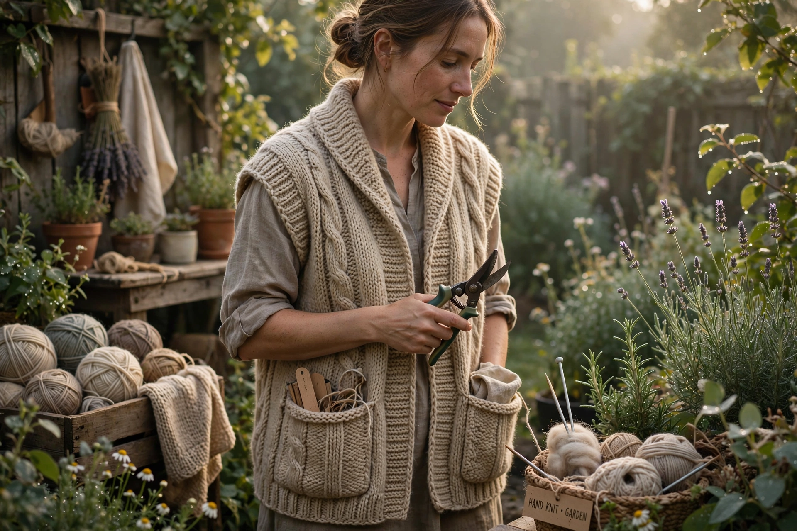
Alt ekte vokser sakte. Hagen lærer det samme som strikkingen vet.
Morgenen i hagen begynner før solen har varmet jorden. En vest med store lommer — til beskjæringssaksen, hanskene og telefonen — og en varm rygg gjør denne morgenen ikke til en prøvelse, men til en glede.
Hagen lærer for øvrig det viktigste strikkingen vet: alt ekte vokser sakte, og det nytter ikke å skynde på det.
fra 750 kr82Lommer — etter din beskrivelse

En ting som er tegnet rundt livet ditt — ikke omvendt.
Alle har noe de alltid bærer med seg: telefon, nøkler, pass, medisin, et lommetørkle til barnebarnet. Fabrikklær kjenner ikke vanene dine. Det som er strikket på bestilling — kjenner dem.
En innerlomme med glidelås. En skjult liten lomme i skjerfet — til kortet. En dyp lomme i vesten, der ingenting faller ut når du bøyer deg. Fortell hva du bærer med deg — så tegnes plagget rundt livet ditt, og ikke omvendt.
83En vott til to

To hender i én vott. Frosten kan bare se på.
Én stor vott, laget slik at to kan holde hender inni den. Den ser ut som en spøk — til du tar den på en vintertur og forstår at det er det varmeste i verden.
Den gis til par på bryllupsdagen, til et vinterbryllup og bare sånn — som en tillatelse til å gå lenger, hånd i hånd, mens frosten kniper i kinnene.
fra 260 kr84Til turer med hunden
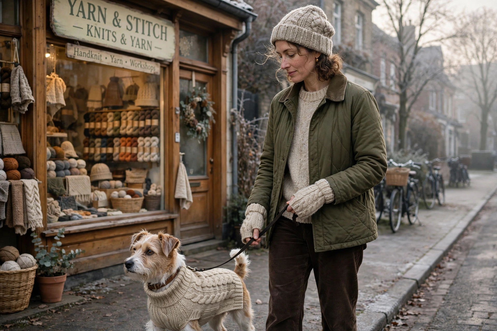
En liten seremoni som dagen begynner med.
Morgenturen med hunden venter ikke mens du ordner hanskene. Pulsvanter der båndet sitter trygt. En vest med lomme til poser og den godbiten som gjør noens morgen.
Og til selve hunden — en genser i samme farge som din (avsnitt 17). En felles tur ut i den stille vintergården — en liten seremoni som dagen begynner med.
85Sokker til å sove i
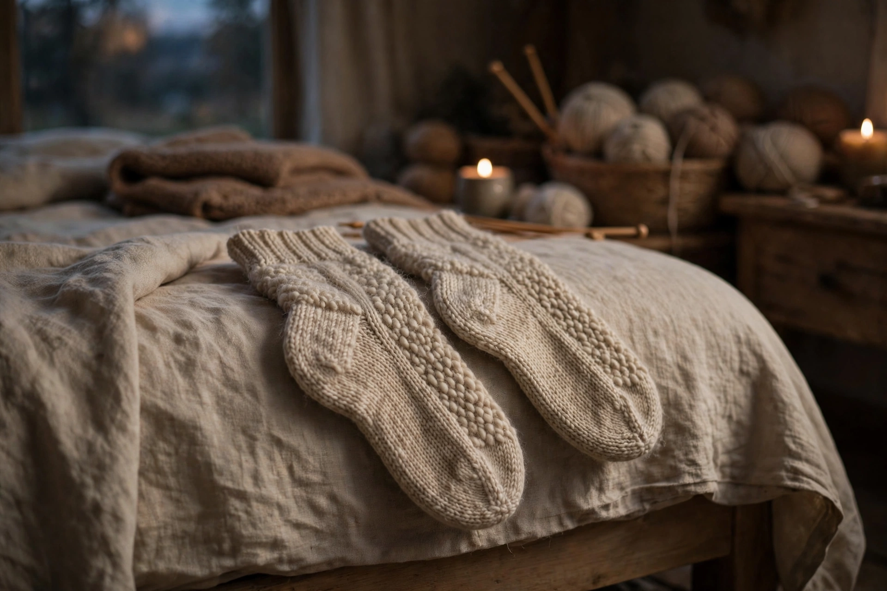
De bestilles til foreldre — og så ringer de en torsdag, etter den første varme natten.
Kalde føtter er søvnens fiende, det vet alle. Sokker av myk alpakka og merino, helt uten en stram strikk, varmer på én kveld og blir på hele natten.
De bestilles ofte ikke til seg selv, men til foreldrene — og det er en av de gavene man ringer og takker for etterpå. Ikke på bursdagen. Bare en torsdag, etter den første varme natten.
fra 230 kr86Myke sokker med løs strikk
Det finnes føtter som trenger ikke skjønnhet, men hensyn: slitne, ømfintlige, eldre. Til dem — en bred, myk strikk som ikke klemmer, og en flat søm som ikke gnager.
Slike sokker vises ikke frem. De bare bæres hver dag, til man slutter å tenke på føttene — og det er det fineste komplimentet et plagg kan få.
fra 240 kr87Tøfler med såle
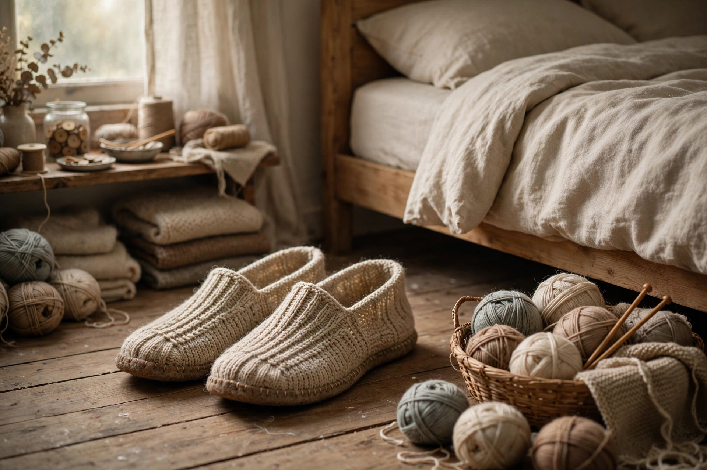
Skritt gjennom morgenhuset vekker ingen.
Strikket overdel, såle av filt eller skinn. Varmt, stille og ikke glatt — skritt gjennom morgenhuset vekker ingen.
Hjemmesko er det mest brukte i garderoben, om man regner ærlig. La dem være vakre: de sees oftere enn finskoene.
fra 380 kr88Ankelsokker og hjemmeballerinaer
Lette som sokker og nette som små sko. Ankelsokker brukes hjemme, tas med på yoga og på reise — i kofferten tar de plassen til ett par sokker, men gir kos som fullverdige hjemmesko.
Gjesteankelsokker ved døren er en liten tradisjon i gjestfrie hjem: et menneske kommer inn — og får det straks varmt.
fra 210 kr89Tepper og soveplasser til dyr

Plassen er valgt. Plassen er tatt. Plassen er godkjent.
Et lite, fast teppe til kurven, til vinduskarmen, til reiseburet. Dyret velger sitt sted selv — vi gjør bare stedet varmt.
Garnet til slike tepper er ikke redd for klør og hyppig vask. Og katten, som kjent fra avsnitt 66, prøver uansett ditt teppe først. Deretter, motvillig, går den med på sitt eget.
fra 300 kr90Sett til lenestolen

Stolen er gjort klar for kvelden: teppe, pute og stillhet.
Et teppe, en pute og et par hjemmesokker i samme fargeskala. Med én bestilling skapes et sted man vil vende tilbake til hver kveld: stolen ved vinduet, lampen, boken — og alt annet får vente.
Et slikt sett gis ved innflytting og til foreldre. Og også — til seg selv. Hvert menneske bør ha en stol der verden blir litt langsommere.
fra 1 250 krTilbakemelding
Vi svarer i løpet av dagen. Ingen spam — bare en samtale om plagget ditt.
Skriv til Nadia 💌
En bestilling, et spørsmål, et bilde av noe som skal repareres eller bare en tilbakemelding — fyll ut skjemaet, så kommer brevet rett til Nadias e-post:
Nadia svarer personlig, vanligvis i løpet av én til to dager.
91Takkegaver
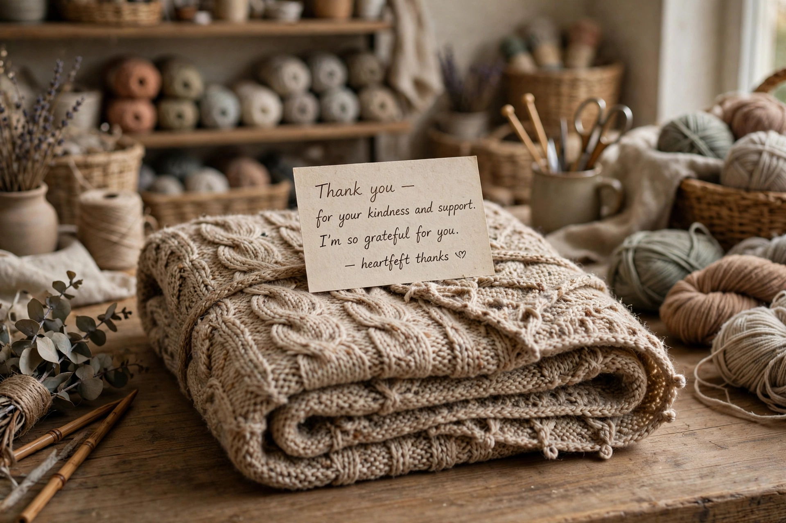
Det finnes mennesker man ikke får sagt det viktigste til med konfekt.
Det finnes mennesker man ikke får sagt det viktigste til med en eske konfekt: læreren som la merke til barnet ditt; legen som ikke ga opp hendene; barnepasseren som barna kaller sin andre bestemor.
Til dem — et sjal, et skjerf eller et par sokker i håndarbeid, og et kort fra deg. Slike gaver settes ikke på en hylle. De bæres — og hver gang husker man hvorfor de ble gitt.
92Merkelapp med navn
Inni hvert plagg som lages på bestilling, kan det bo en liten stofflapp: navnet til den det er strikket til, en dato og noen få ord. Ingen ser den. Men den er der — som en lapp lagt igjen i lommen på en frakk.
Etter år, når plagget tas frem fra skuffen og brettes ut, er det nettopp lappen som forteller hvor det kommer fra, og hvorfor det ble tatt så godt vare på.
93Hvordan ting tåler posten
Et strikket plagg reiser rolig. Det brettes uten skarpe kanter, pakkes i papir og drar i tett emballasje — gjennom sorteringer, biler og, hender det, halve kontinentet.
Det er ikke redd for verken risting eller frost i lasterommet: det er skapt for et nordlig liv. Ta det ut av pakken, rist det, la det ligge en time — og det er igjen det samme som lå på verkstedbordet.
94Leveringstider til verden
Posten, som strikkingen, liker ikke hast. Her er dens vanlige, ærlige tempo:
| Hvor | Vanlig posttid |
|---|---|
| Norge | 2–5 dager |
| Europa | 5–12 dager |
| USA og Canada | 10–20 dager |
| Resten av verden | etter avtale — spør ved bestilling |
Til disse dagene legges strikketiden — derfor begynner vi å snakke om gaver til en bestemt dato i god tid, i rolige uker (avsnitt 24).
95Betaling fra utlandet
Hvis du bor i et annet land, blir vi enige om en praktisk måte sammen: internasjonal bankoverføring eller PayPal. Uten hastverk, uten liten skrift, med svar på alle spørsmål før du betaler noe som helst.
96Hastebestillinger
Det hender: en fest om en uke, og ingen gave. Skriv med en gang, samme dag. En liten ting — en lue, sokker, en leke — lar seg ofte strikke og sende i tide, hvis det første døgnet ikke går tapt til tvil.
Vi sier det ærlig den første dagen: om vi tar det på oss eller ikke. Hvis ikke — foreslår vi et gavekort, som aldri kommer for sent.
97To like ting
En ting i par er ikke «det samme en gang til». Begge strikkes rett etter hverandre, av samme parti garn, så fargen stemmer helt — ikke omtrent: garn fra ulike partier kan skille med en halv tone, som bare synes når de ligger side om side.
I tid tar to ting omtrent halvannen. Som med folk i et par — sammen går alt litt lettere.
98For klubber, kor og lag
Like luer og skjerf i klubbens farger binder folk sammen roligere og sikrere enn noen uniform. De tas på før start, før man går på scenen, før fellesbildet — og plutselig fremstår laget som ett.
Et idrettslag, et kor, en turgruppe: fortell oss om fargene deres i god tid; håndarbeid liker litt spillerom — så er alt klart til dagen deres.
99Strikket kleskode
En håndstrikket ting kan være velkledd. En cardigan som holder skulderlinjen. Et sjal som fullfører kveldsantrekket i stedet for å krangle med det. En vest som får skjorten til å se tilfeldig ryddig ut.
Hemmeligheten ligger i garnet og passformen: rolige farger, ren finish, ingenting overflødig. Da leses strikk ikke som «hjemmelaget», men som «sitt eget».
100Den hundrede bolken
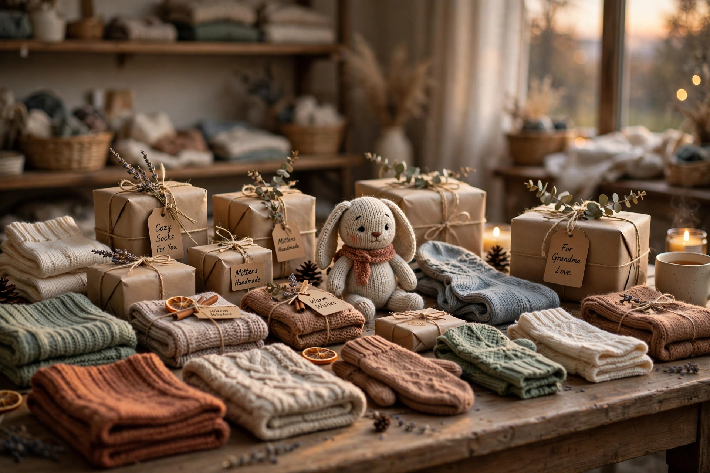
Hundre bolker senere er bordet fortsatt fullt — som den første kvelden.
Du har nådd den hundrede bolken. Stopp et sekund og se hvor mange anledninger til å gi bort noe strikket som får plass i ett helt vanlig liv.
Bursdag og innflytting. Den første snøen og det første barnet. Jubileum — og bare en tirsdag man vil gjøre varmere. Pensjon og første studieår. Flytting til en kald by — og veien hjem igjen. En anledning trenger man ikke lete etter. En strikket ting betyr i seg selv én ting: «jeg tenkte nettopp på deg».
101Gaveideer under 300 kr
Et lite budsjett er ingen hindring. Små ting gis med like mye varme som store.
- bokmerke — fra 70 kr
- trekk til krus — fra 90 kr
- babytøfler — fra 150 kr
- en strikket blomst som ikke visner — fra 150 kr
- sokker eller votter — fra 250 kr
102Gaveideer: 300–600 kr
Et mellomstort budsjett rekker allerede til en hel ting, en man vil bruke hele vinteren.
- lue i merino — fra 350 kr
- snood eller hals — fra 320 kr
- votter med fleece — fra 390 kr
- koseleke — fra 300 kr
- tøfler med såle — fra 380 kr
- veske i bomull — fra 350 kr
103Gaveideer: 600 kr og oppover
Store gaver gis sjelden og huskes lenge. Her er ting som blir hos et menneske i årevis.
- skjerf eller stola — fra 600–650 kr
- vest — fra 750 kr
- poncho — fra 950 kr
- pledd — fra 1 200 kr
- genser — fra 1 300 kr
- sett til lenestolen — fra 1 250 kr
104En gave til den som har alt
Han har alt som selges. Igjen står det som ikke selges ferdig: en ting skapt bare for ham. Hans mål, hans farge, hans vaner — tatt hensyn til i lommene og i ermelengden.
Slike mennesker lar seg ikke imponere av pris. De røres av oppmerksomhet — og oppmerksomhet kan ikke kjøpes, den kan bare legges ned, time for time, maske for maske.
105Gaver på avstand
Mamma i et annet land. En datter som har reist bort for å studere. En venn på den andre siden av havet. Skriv inn mottakerens adresse — så reiser pakken rett til ham, med et kort fra deg inni.
Du får ikke se tingen med egne øyne. Men du vet hvilken kveld den pakkes opp — og det er nesten det samme som å være der.
Tilbakemelding
Vi svarer i løpet av dagen. Ingen spam — bare en samtale om plagget ditt.
Skriv til Nadia 💌
En bestilling, et spørsmål, et bilde av en ting som skal repareres, eller bare en tilbakemelding — fyll ut skjemaet, så kommer brevet rett til Nadias e-post:
Nadia svarer personlig, vanligvis innen én til to dager.
106Et brev i pakken
Til hver pakke kan det legges ved et brev. Teksten din — skrevet for hånd med vår hånd, eller skrevet ut, alt etter hva som føles roligst for deg. Det kan også være kort: tre linjer sier noen ganger mer enn en side.
Ting glemmes. Ord som kom sammen med dem — nesten aldri.
107Koseleker for voksne
Voksne trenger leker ikke mindre enn barn. De innrømmer det bare sjeldnere. En koseleke bor ved puten, reiser i bilen, venter på arbeidstolen på tunge dager.
De gis til studenter før eksamen, til venner før en flytting, til en selv — uten anledning. Det som rett og slett trøster, trenger ingen god anledning.
fra 300 kr108Varmeflasker og varme hjelpere
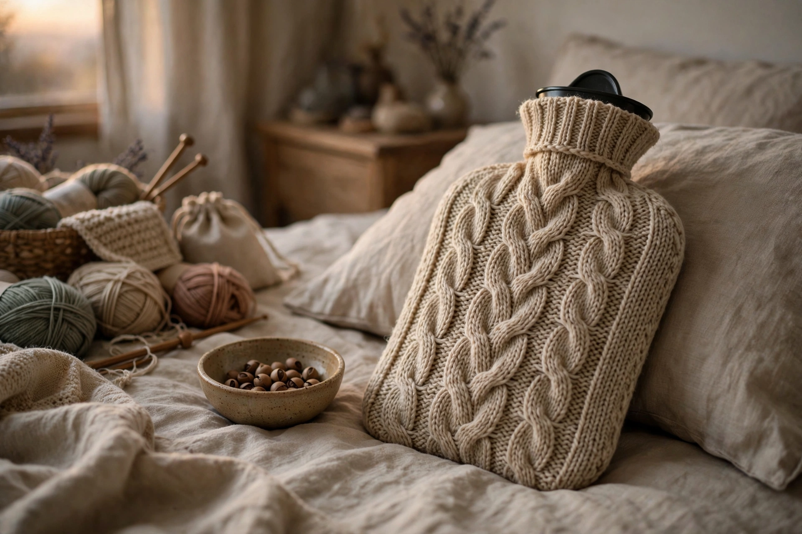
To minutter — og varmen holder i nesten en time.
Et strikket trekk til en varmeflaske eller en flaske med varmt vann. Inni — linfrø eller kirsebærsteiner som varmes i mikrobølgeovnen: to minutter, og varmen holder i nesten en time.
Mot magen, mot korsryggen, i en kald seng en halvtime før leggetid. En måte å varme seg på som er gammel som verden — og fortsatt en av de ærligste.
fra 240 kr109Lavendelpose

Lavendel i små poser dufter av en sommer man bestemte seg for å bevare.
En liten strikket pose med tørket lavendel. Den legges i skuffen med sengetøy, henges i skapet, gjemmes i kofferten.
Duften holder i månedsvis, og klemmer man litt på posen, våkner den igjen. En pose legges ofte gratis ved store bestillinger: ro skal ikke ha noen inngangsterskel.
fra 60 kr110Ting for vått vær
Vestkysten av Norge kjenner regn bedre enn noen værmelding. Ull er den eneste fiberen som varmer selv når den er våt: den trekker til seg fukt og holder på varmen når syntetiske stoffer for lengst har gitt opp.
For slike dager — votter og sokker med litt nylon for styrke, og tett strikk som holder vinden ute. Du kommer våt hjem, men ikke frossen.
111Knapper som forandrer alt
Den samme tingen med ulike knapper — to forskjellige ting. Tre gjør cardiganen hjemmekoselig, metall gjør den urban, horn — nesten festfin.
Ved bestilling viser vi 2–3 knappalternativer til nettopp din ting. Det er den siste detaljen, og den velges langsomt — slik man setter et siste punktum: når man allerede vet hva det ble.
112Glidelåser og lukninger
En vest eller cardigan kan lages med glidelås, med knapper eller helt uten lukning — den kastes over skuldrene og holder seg selv. Det avgjøres før arbeidet begynner, og vi snakker om hvordan du liker å ha slike ting: å lukke raskt med én hånd, eller i ro og mak, knapp for knapp.
Lukkingen er tingens rytme. Vi finner den som passer til din.
113Reparasjon av lukninger
En ødelagt glidelås betyr ikke slutten for en ting. Den skiftes ut, og en god genser lever videre — noen ganger enda lenger enn med den første: den nye lukningen velges sterkere enn den gamle.
Send et bilde — så sier vi hva som kan gjøres. Ting skal ikke dø på grunn av en detalj.
114Å friske opp en gammel ting
En elsket genser kan bli din igjen uten å strikkes helt på nytt. Strikk nye mansjetter der de gamle har strukket seg. Sett lapper på albuene — i skinn eller semsket, de bærer verdigheten av et liv som er levd. Bytt knappene til noen som vil eldes vakkert sammen med tingen.
Noen ganger trenger en ting ingen ny fremtid. Den trenger at fortiden repareres.
115Fra en gammel ting — en ny
Mammas genser, som ingen lenger bruker, kan rekkes opp — langsomt, nøste for nøste — og av ullen kan det strikkes votter til barnebarna hennes. Tråden bevarer varmen fra hendene som strikket den først.
Dette er arbeid om minner mer enn om strikking. Slike bestillinger snakker vi om med særlig varsomhet — og vi gjør dem først, utenom køen.
116Barneting å vokse i

Mansjetter brettes opp i dag — og foldes ned i morgen, når armene har vokst.
En god barnegenser kan vokse. Mansjetter som brettes opp, slippes ned etter hvert som armene vokser. Lengden er lagt inn med litt ekstra. Festene på babytøflene — med plass til å vokse.
Et barn vokser fort. Men en ting strikket med litt ekstra rekker å bli elsket — og det er det eneste som virkelig kreves av barneklær.
117Vask av barneting
Et kort notat til foreldre — den samme roen som for voksenting:
- Gel uten kraftig lukt; barnehud hører dufter sterkere enn vår.
- Vann 30 °C, «ull»-program — eller bare en balje og hender.
- Skyll til vannet er helt klart.
- Tørk utbredt på et håndkle, langt fra radiator og travelhet.
118Ro for sensitiv hud
Til nyfødte og mennesker med sensitiv hud velger vi garn merket OEKO-TEX® Standard 100 — det betyr at det er testet for skadelige stoffer av et uavhengig laboratorium, ikke bare på ord.
For de aller minste vaskes garnet i tillegg med et nøytralt middel før arbeidet begynner. Det første plagget i et menneskes liv skal være fullkomment mykt — og fullkomment ærlig i sammensetningen.
119Norsk garn
Vi er særlig glade i garn fra norske fabrikker — Rauma og Sandnes Garn. Det ble skapt for dette været av generasjoner av mennesker som selv gikk i gensere strikket av det: varmt, ærlig, med en karakter som verken falmer eller gir opp etter én sesong.
En ting av slikt garn er et lite stykke Norge, hvor den enn bor siden.
120Laget i Norge
Hver ting fra verkstedet er strikket for hånd i Norge. Ikke «i norsk stil», ikke «med norske motiver», men her: ved dette vinduet, i dette været, i disse stille kveldene.
Og den reiser herfra til deg — med et kort der det kan skrives hvordan regnet var den dagen.
Tilbakemelding
Vi svarer i løpet av dagen. Ingen spam — bare en samtale om plagget ditt.
Skriv til Nadia 💌
En bestilling, et spørsmål, et bilde av en ting som skal repareres, eller bare en tilbakemelding — fyll ut skjemaet, så kommer brevet rett til Nadias e-post:
Nadia svarer personlig, vanligvis innen én til to dager.
121Din idé — våre pinner
Du har lest helt til slutten. Videre trenger du ikke bla i noe og ikke bestemme noe akkurat nå.
Hvis du på veien møtte en ting som mangler i livet ditt eller i livet til noen du er glad i — skriv noen ord til oss. Eller bare kom tilbake hit i morgen: denne siden har det ikke travelt, og det har ikke vi heller. 🧶